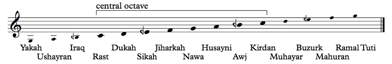
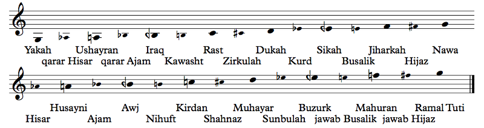
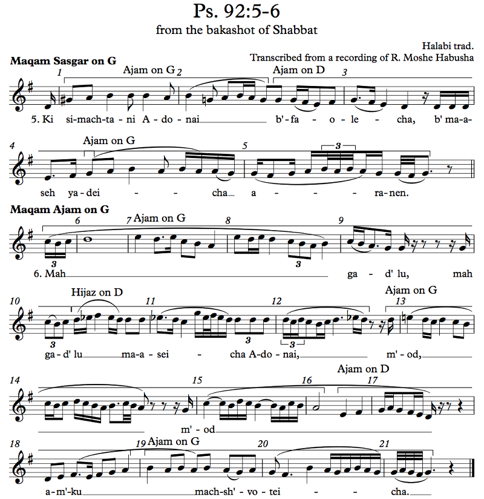
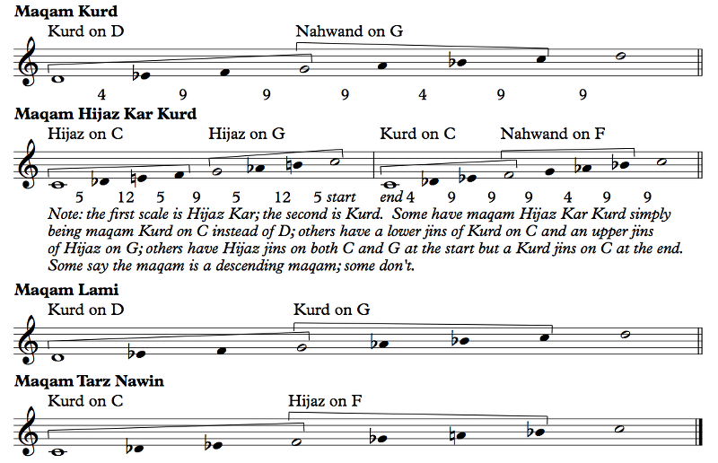
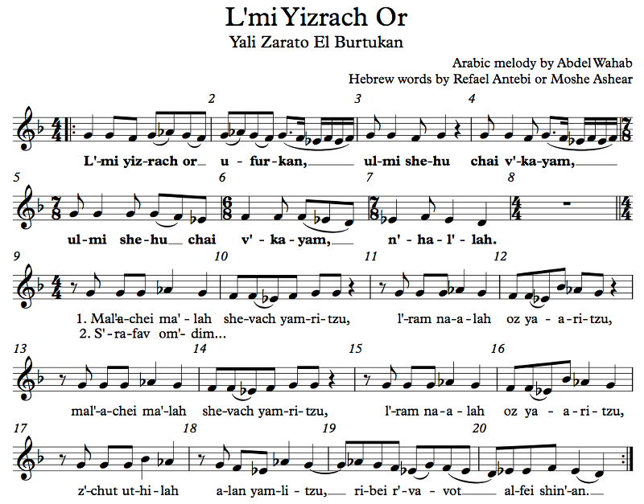
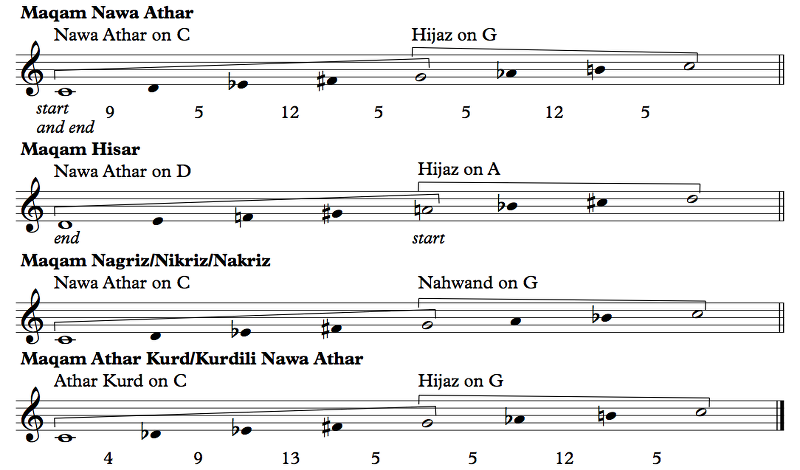
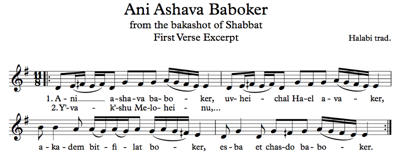
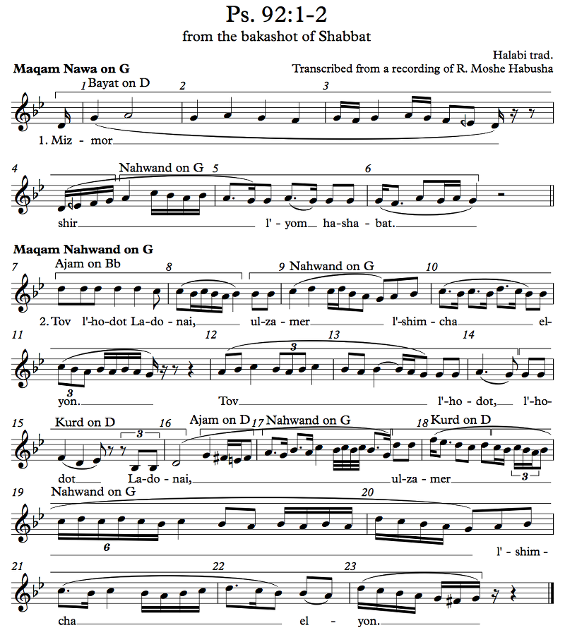
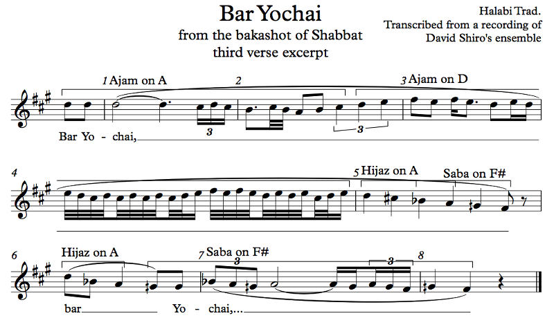

So far we've focused mostly on Western music. We've talked about Jewish music a bit, but that was mostly Western-style Jewish music. Now, though, I want to talk about a radically different conception of modes: maqamat, used in Arabic music. The word "maqam", plural "maqamat", means "place" in Arabic (cognate with "makom" in Hebrew), and it refers to a mode, like major or minor but different. Maqam-based music is generally not harmonic, only melodic, so the fifth has less importance than in Western music. You don't generally find chords in Arabic maqam music, though that doesn't stop Arabic music from using chords in more Western-like tunes, which are said to be in Western-like maqamat like maqam Ajam or maqam Nahwand, roughly corresponding to major and minor, respectively.
Maqamat sometimes have varying ascending and descending forms, much like the Western minor mode. One crucial difference, though, is that the note the maqam starts on is actually important. In Western music, G major and B major are identical, but they might correspond to different maqamat. For example, maqam Rahat El Arwah is exactly the same as maqam Huzam (a popular variant of maqam Siga) but a fourth lower, which is said to give it a different character. This doesn't stop you from playing Huzam on any given level, but if it's a low key, you'd just call it something else. Different ways of approaching melodies also merit different maqamat, such as maqam Oj having the same scale as maqam Iraq but with different sayr, meaning melodic development.
Also, they use quarter tones.
Yeah, the steps aren't just half steps and whole steps (and augmented seconds). There are 3/4-steps too (and occasionally 1/4-steps or 5/4-steps). It's a really cool sound for people who aren't used to it yet!
Well, not quite. In Western music we use equal temperament, but there's really no need for that in Arabic music, especially on instruments like the oud that don't have fixed pitch. The oud is a string instrument somewhat similar to the guitar but with no frets. This means that it doesn't need frets that are compatible with whatever scale it needs to play. For example, on the guitar, if you want to play in C major or F# major, all those notes still need to work and be in tune. You might tune the G string too low, for example, so that the G# on the first fret is in tune with the open E of the bottom string, and that will screw up your tuning for everything else. But on the oud, you can't go lower than open strings, sure, but you can tune the F (for example) lower when you play in one maqam than when you play in another. That said, there's debate about this within the Arab musical community, and some people do try to play in 24-TET.
Turkish music, which is distinct from the Arabic maqam music we're talking about, actually uses 53-tone equal temperament, or something like it. It divides the octave into 53 steps called commas, and a major second (D to E) is 9 commas while a minor second (E to F) is 4. That means that the minor second isn't half of a major second. Within this comma system, you have a lot more freedom regarding where the notes go in a scale.
They don't. Rather, they'll pick seven notes in the octave for a scale, much like we do in Western music, with other variations of the notes being available as well for modulations — they can tune something up or down if necessary, within the system.
Still, this is more of a theoretical tool for understanding the Turkish system than an extremely precise mathematical science; ultimately, music is written and performed by ear. A comma is about 22.6 cents, so a quarter step might be 2 (45.3) or 3 (67.9) commas, a half step 4 (90.6) or 5 (113.2), a whole step 8 (181.1) or 9 (203.7), etc. Recall that a 12-TET half step is 100 cents, so a quarter step is 50 cents and a whole step 200. The Turkish system allows us to fudge that a bit.
That's not the right question to ask. This just happens to be how Turkish music developed!
Well, that is the right question to ask! Maqamat are said to use a 24-TET system, and they give names to the 24 notes in two octaves, from low-G yakah to middle-G nawa to high-G ramal tuti (we'll look at them shortly), but in reality (at least in instruments without fixed pitch) the tuning isn't quite so strict, making it closer to the Turkish tuning than Western tuning. For example, it's generally accepted that the Nahwand tetrachord, which is similar to the Western minor tetrachord (C D Eb F), has an Eb that's a comma or two lower than in the Hijaz tetrachord (D Eb F# G).
I mentioned "tetrachords" earlier, which are scale fragments that aren't necessarily four notes — could be three or five. In maqam music, these tetrachords — one tetrachord is a jins (from the Greek "genus"), plural ajnas — are far more important than in Western music. We'll see this in action shortly. Given the greater variety of notes available, there is similarly a greater variety of ajnas available, and these ajnas are used as common elements in modulation, as well as serving as temporary centers. Not tonal centers, mind you. Most maqam music is not tonal but rather modal. This is a distinction that we will return to. But you will notice that what we Westerners might think of as a tonal center is not the principle around which maqam music is organized; rather, that music is organized around these ajnas.
Before we continue, I want to mention that maqam theory is not a single, monolithic, accepted-by-everyone theory. There are often conflicting definitions of particular maqamat. Two great online sources are Maqam World and Oudipedia, and you'll find different, conflicting information in those two sources. Maqam World talks about one-octave maqamat, while Oudipedia has the maqamat span two octaves (the upper octave is not necessarily the same as the lower). Read some books and they'll have even more diverse views. Furthermore, different communities use different maqamat differently. It's probably better to think of the maqamat as describing a wide set of musical practices than prescribing precise scales.
The study of maqamat can (and should) span far more than a short section in a theory book, but this is what we have to work with, so our treatment will necessarily be somewhat abbreviated. There are certainly books on the subject (I have one by David Muallem called "The Maqam Book") as well as many contradictory treatments of it, in part reflecting the variety of traditions that comprise the greater Arab maqam tradition. This isn't even getting into the Iraqi maqam system, which is different, or the Turkish makam system (spelled differently for a reason), which is very different. Many of the names in the Arab system are of Persian origin, and the Persian dagstah system is also very different. The nubah system in North Africa is also very different. Whatever they do or used to do in Yemen is... I don't even know. The shashmakam system of Central Asia is very different. The Arab maqam system really refers to a musical tradition from a fairly small region of the world, and yet, it's still incredibly rich and varies from place to place within that region.
Before we go on, I should mention that I'll provide two tunings for most of these scales in the Offtonic Scale Keyboard, a 24-TET version and a 53-TET version. Neither is necessarily more authentic, especially as we quickly run into the limitations of the 53-TET system when we want to change the tunings of notes by less than the 22.6 cents of the comma. You can also explore the complete 24-TET scale in the keyboard and look around for interesting new harmonies (which isn't relevant to this discussion at all but is lots of fun).
In Western music, all 12 pitch classes are equal.
Are you accusing the West of racism?
OK, fine, I supposed that's true. In the past, we used to have a system that prioritized certain notes over others, so a C major scale (all white keys) would be in tune while an Ab major scale (lots of black keys) would be way out of tune with the wolf fifths and other wolf intervals we talked about in Chapter 5, so that, in a sense, we can think of the white notes as more important. Indeed, our white notes have names — C, D, E, F, G, A, B in English, do/ut, re, mi, fa, sol, la, si in other languages. The black notes don't have their own names; they have names derived from the white notes. So you have a C sharp — it's one semitone up from C — and a Gb — one semitone down from G. While nowadays we don't really consider the white notes to be any different from the black ones, in a sense the white notes are more fundamental to how we build our scales.
The Arabic scale also has a set of fundamental notes (remember that the backwards flat means half-flat):
Example 7.68
That's a good question. If you remember when we talked about Boethius's system of notes, we used to have A, B, C, D, E, F, G, H, I, L, M, N, and O as notes, but at some point we decided to just repeat names at the octave. The idea behind this is that notes below the lowest and above the highest are just not practical, melodically. And maqam music is all melodic, so that's the only important consideration. This doesn't stop people from actually going higher or lower in melodies and improvisations, but those notes don't have unique names; they're just called qarar for lower notes (qarar Jiharkah for a low F, for example, just like how we say "low F") and jawab for higher notes (jawab Husayni for a high A, for example, again, just like how we say "high A"). The F another octave lower would then be qarar qarar Jiharkah, and so on in both directions.
By the way, that middle octave has the same notes as maqam Rast, which we'll talk about shortly, so if you want to hear how this sounds, you can try that in the Offtonic Scale Keyboard. Also, please note that the note Kirdan (high C) is often also called Mahur.
In Western music, A on the treble staff is 440 Hz. Unless you're playing a transposing instrument, in which case it's not. It's the same thing here, except it's less defined. For an ensemble playing together, everyone is playing essentially the same melody, perhaps with small variations, so the Yakah on the oud will be an octave lower than on the violin, which will be an octave lower than on the ney. And if you want to tune everything down a step or up a step, that's OK too; the pitch is relative. In vocal music, for example, the ensemble could arbitrarily decide that Dukah is this note, even if they're a little off (or a lot off), so long as they maintain their relative pitch. In fact, this is true for Western ensembles too. Even A 440 isn't completely standard for everyone; in the past it was a bit lower, and some orchestras actually play a bit higher. Some percussion instruments are deliberately tuned to A 441 or A 442 in order to sound a bit brighter than the ensemble and create a bit of shimmer. So it happens that in ensembles for Arab music, everyone transposes to some extent.
The transposition is a bit stricter in cases where fixed-pitch instruments are used, like the qanun or ney, and even the oud and violin have open strings that need to be tuned, but so long as everyone agrees on the pitch, that's all that matters.
Mostly.
Yeah, it's actually OK if you're out of tune by a little bit, at least in the traditional ensembles (orchestras are another matter). It's part of the magic of the Arabic sound!
Now, this fundamental scale is the traditional basis for Arabic maqamat. Several maqamat, like Rast, Iraq, Siga, and Hoseni, use only these notes. But you'll notice that there are no half steps in this scale, but they definitely exist in other maqamat. So there's a second level of notes, equivalent to the black keys, that fills in the gaps:
Example 7.69
There's one note in each gap, and for the most part, these names correspond to maqamat that use these notes; for example, maqam Hijaz uses the F#, called Hijaz. It's not entirely clear which name came first. The fundamental notes also have names that correspond to maqamat, often ones that begin on that note. For example, maqam Siga begins on the note Sikah. The word comes from Persian and means "third note", much like Yakah, Dukah, and Jiharkah mean "first note", "second note", and "fourth note", respectively.
To the first question, I'm naming maqamat by their Sephardic names, which come from Arabic but aren't actually Arabic, while I'm naming the notes by their Arabic names. What I know is Sephardic music, so that's why I'm using those names; you're welcome to use the spellings that sound more Arabic. To the second question, it's historical reasons. Presumably C used to be called Yakah at some point, and eventually, the name ended up attached to a different note instead. This happens to maqamat as well; we have maqamat Yakah, Ashiran, Iraq, Rast, Siga, Jiharkah, Nawa, Hoseni, Oj, Kirdan, and Mohiyar, but why not Dukah? There used to be a Dukah. Nowadays there isn't. The literature isn't entirely clear, but what we now call maqam Bayat was probably called Dukah a few centuries ago.
These are 29 primary and secondary notes, but from G to G there are 49 notes, since there are 24 to the octave. The other notes, the tertiary notes, don't have their own names; they're based on the secondary notes around them. A secondary note like Zirkulah can be raised a quarter step (tik Zirkulah) or lowered a quarter step (nim Zirkulah). Looks like this:

Example 7.70
These tertiary notes aren't generally used except as occasional leading tones and in some rare maqamat. I should quickly explain the accidentals again just in case you don't remember. The backwards flat is a half-flat, and I represent it in text form as a d. So, note Iraq is Bd. The half-flat and a regular flat together mean 3/2-flat, of course, which I represent as db; qarar nim Hisar is Adb. The sharp with only a single vertical stroke is a half-sharp, which I represent as a t; tik Kawasht is Bt. The sharp with three vertical strokes is a 3/2-sharp, which I represent as either t# or #t; tik Zirkulah is C#t.
Also, let's talk a little bit about terminology. We usually talk about whole steps and half steps, right? In Arab music, we have three-quarter steps and occasional five-quarter steps (and very occasional quarter steps). The math is obvious. Since a whole step is also known as a whole tone (see: the whole tone scale), a half step is a semitone, and a quarter step is a quarter tone. You'll hear people talking about notes like Ed and Bt as quarter tones, but technically, the quarter tone is a small interval (which is not a sum of semitones so we say that it's microtonal), not a note. Some people may call these quarter notes, but you can immediately see why that's terrible. The part that's confusing is that a flat or sharp changes a note by a half step, so a half flat or half sharp changes a note by a quarter step. A quarter flat, then, would change a note by a 1/8-step. That's a plausible thing to do, but it's not something done in Arab maqam music, so we're not talking about it. There are no quarter flats involved, just half flats and quarter steps (or quarter tones).
So let's start by listening to some music in a maqam we don't have in Western music. This is Yaareh Aleinu Ruach (performed by an ensemble led by famous cantor David Shiro), a fun tune from the bakashot (Shabbat songs) of the Aleppo Jewish community. It's in a maqam called Suznak in the Rast family:

Example 7.71
Yeah. Yes, it does. The tuning sounds a bit different to Western ears, but it's otherwise normal. The bottom tetrachord actually sounds pretty major, doesn't it? It's not, because of the half-flat third, but it's close enough, like a major 3 that's just a bit flat. And the b6 is also a bit high and the 7 is a bit low, two fairly common features whenever you see an augmented second in maqam music. As for notating it in C, C is the pitch level for this maqam. The performers performed it a bit lower; that's perfectly normal. But I think it should still be notated in C.
You'll notice, by the way, that I put some jins analysis above the staff. Maqam Suznak is composed of two tetrachords/pentachords/trichords/whatever — two ajnas — Rast on C (note Rast) and Hijaz on G (note Nawa). We'll see these in more detail in the coming sections. The Rast tetrachord goes 1 2 d3 4, and the Hijaz tetrachord goes 1 b2 3 4. The Hijaz tetrachord also shows up in the harmonic minor scale (on 5) and phrygian dominant (on 1), but Rast, with its neutral third, is not part of the Western 12-tone system. We also have Siga on Ed (note Sikah) as a secondary jins; Siga is generally considered a trichord that goes 1 d2 d3, but it almost always appears on Ed (Ed F G) or Bd (Bd C D).
Just like in a lot of Western music, this song hangs out in one tetrachord (or trichord or pentachord, etc.) at a time, with possibly a leading tone here and there, and the roots of these tetrachords are the stable points of the mode. When we're on a C jins, C is the center; on a G jins, G is the center. The Ed jins Siga here is more secondary; while the real stable points are the C and the G, the Siga jins on Ed at measure 3 actually centers on the G, while the one at measure 7 centers on the Ed. There's a big difference here between modern Western music and maqam music: maqam music is modal, not tonal. This refers to the fact that we don't really have function or stability beyond these stable points, the roots of the primary and secondary ajnas in the maqam. The bottom note of the scale isn't necessarily a tonic in the sense of all of the other notes somehow leading to it; rather, the bottom of each jins is the tonic just for that jins. The tonic of the bottom jins is generally thought of as the tonic of the maqam, but it doesn't have to be; however, it's generally the final of the maqam. We'll see this when we talk about the Siga family of maqamat, where the Ed doesn't really feel like a tonic, but it's where the music rests. Siga modes are weird.
Because this performance skips verses 4 and 5, of course! This song is relatively short, but this group recorded the entire thing of bakashot. I have the recordings on CD; it's a 5-CD set (not all of which is on YouTube, sadly). If they sang every verse of every song their vocal cords would explode. (On the other hand, they're missing some fun ones in other songs...)
Here's another performance of the same song that does things somewhat differently, this one by the great cantor Moshe Habusha. It's too similar to transcribe, but you should pay attention to the differences. First, the B naturals at measures 4, 5, and 6 have become Bd's when he sings, but not in the instrumental verse at the end on the oud. You can listen to this much better by using YouTube's settings to slow down the video to 50%; this is an indispensable tool when transcribing music on this service. It's actually somewhat unclear what the actual pitch is supposed to be, which is fairly normal for fast notes in general but especially when dealing with the small differences of a quarter step. Another small difference is that the Ab at measure 3 is sung as a G... that then goes up to Ab. In fact, the Ab - F - Ed eighth notes have turned into G - Ab - F - G - Ed 16th notes. Measure 5 has a similar thing going on in the second half. If you listen to Arab and Arab-related music, you'll find that this is incredibly common: descending eighth notes get embellished by each one going up a step in the scale before going to the next note down. A scalar run of G - F - Ed - D - C will almost always be sung as G - A - F - G - Ed - F - D - Ed - C (well, assuming the scale has an A; if it were this song, it would be Ab). The final difference I'll point out is that the half note at the end becomes just an eighth note that goes straight into the pickups into the next verse. I have a feeling that the other recording is more "correct" in some sense, since it keeps the 4/4 time going (despite the 3/4 bar, I guess), but these melodies evolve by being sung, and clearly someone thought it was fun to jump the gun on the next verse and it stuck. I've listened to quite a few other recordings of this song, and most of them do jump the gun that way.
Now, what would happen if David Shiro and Moshe Habusha got together to sing this song? No, I don't know of a recording of that very eventuality (though you can definitely find recordings of the two of them together). But if you held a bakashot session and both of them showed up without rehearsing beforehand, they'd sing this song a bit differently together. Shiro would say "Yaareh aleinu ruach (ruach)", while Habusha would not say the echo. It would be a neat effect. They would not agree on the 7th degree of the scale either, so it would sound out of tune. They probably wouldn't agree on the third degree either, but the difference would be smaller. On the other hand, they might adjust to each other. The Ab at measure 3 would definitely not match, and nobody would really care. When it came time for the second verse (let's assume they did know beforehand which verses they're going to sing), Habusha would jump the gun and Shiro would not. What would happen? Well, they're both competent musicians, so most likely, Shiro would yield to Habusha. Why not the other way around? Because it's easier to come in late than to get someone to shift the song back two beats. Habusha would sing "Alei asor", and Shiro would realize that he's not waiting and would start back on "vaalei navel (navel)". Next verse, they'd both start the verse early.
This little thought experiment is actually very important for a number of reasons, but the most important one is that we need to be able to think like real musicians approaching music. When we write music, we need to have in mind how performers will approach it, how different performers might get different impressions of it, and how those performers will resolve those differences. Will they be able to fix them automatically by listening? Are they skillful enough to do that? Will they have a lot of rehearsal time on the piece? Will they have time during rehearsal to focus on those issues? Do you even want the differences resolved in the first place? I'd argue that for this piece, the roughness is part of the style, but what about the pieces you write?
Anyway, let's continue with our brief study of maqamat by actually looking at some maqam families. To do that, we're going to listen to improvisations on these maqamat, specifically in this recording of Ps. 92 (begins at 2:07:11 and ends at 2:17:17) by Moshe Habusha. Traditionally, Ps. 92 is the centerpiece of the bakashot service, being the psalm for Shabbat, and each line of the psalm is sung in a different maqam (though different books specify different maqamat for each line; this particular recording follows Shir Ushvachah Halel V'zimrah, available online at the Sephardic Pizmonim Project. We're not going to look at the lines in order because the first line is in maqam Nawa and that one's actually quite complicated to explain. If you want to hear more from any maqam, my suggestion is to search online for a taksim in that maqam. A taksim (or taqsim, plural takasim/taqasim) is an improvisatory instrumental piece that ideally follows the traditional melodic development of the maqam, exploring its ajnas in the prescribed way, ending on the prescribed note, etc. There's a lot of optional formalism when it comes to maqamat, and listening to (and attempting to emulate) a taksim is one of the best ways to learn it. These lines from Ps. 92 are the vocal equivalent. So let's dive in!
This is the basic form of maqam Rast; it consists a Rast jins on C (Rast) and a Rast jins on G (Nawa), with a secondary Siga jins on Ed (Sikah):

Example 7.72
The numbers under the staff indicate the number of 53-TET commas between the notes (which not everyone agrees with, so take them as just one example). I've provided two versions of the basic scale in the Offtonic Scale Keyboard, a 24-TET version and a 53-TET version (as well as two versions of the scale with both ascending and descending forms, as you'll see below). Note that actual musicians aren't going to play either one exactly. If you play around with both, though, you can hear the differences. The fourth and fifth are more in tune in 53-TET, and the neutral third (neutral because it's neither major nor minor) is higher than in 24-TET. In the Middle East, the pitch of the neutral third actually varies, with the Egyptian Ed sounding lower than the Syrian; these are two possibilities. The difference isn't large. The 24-TET Ed is obviously 350 cents above C, while the 53-TET one is about 362 cents. Still, if you play them both you will hear the difference.
Now, when we talk about maqam families, we're essentially grouping them by their initial jins. The sound of the maqam depends much more strongly on this jins than the upper jins, so we use it to keep track of the maqamat. For each jins, there's usually some list of maqamat that begin with it (there are some exceptions too). Here are a bunch of the other maqamat that belong to this family (remembering that different sources might name maqamat differently):

Example 7.73
This is sort of like the difference between dorian and minor; they're both minor, really, but dorian means you play one of the upper notes differently. That's basically what's going on here, with a bit more.
Historical reasons, and also people decide to play one note differently and a new maqam gets named out of nowhere. Also, as you can see with maqam Mahur, people just don't agree on what different maqamat (or the same maqamat) are called. So let's tackle these in order.
Um, hell no. Sorry. But you can probably find them on YouTube if you're curious.
To start with, Rast has an ascending form and a descending form, much like the Spanish scale and melodic minor. Really, though, you should think of the Bd as a kind of unstable note, which can go either way. This is true in a number of maqamat that we'll see a bit later. Maqam Kirdan (which doesn't get its own entry in the Offtonic Scale Keyboard) is the same as maqam Rast except you'd start on the high C going up and eventually make your way down to the low C; this performance practice is known as the maqam's sayr. Both Rast and Kirdan, and also Mahur, Suznak, and Nayruz, have Rast on C as the first jins and another jins on G as the second jins; this means that the two ajnas are disjoint and separated by a whole step. The root note of the second jins is the dominant of the scale, which in Arabic is called the ghammaz. In Western music, we almost always have the dominant as the 5 of the scale, in but Arabic music that's not necessarily the case, as we can see with some of these maqamat.
Some people have Mahur as having an Ajam jins on G (the major tetrachord); some have it only when ascending and Nahwand (the minor tetrachord) when descending. Some have maqam Mahur start low and end high; some have it start high and end low; some just have it high the whole time (essentially a plagal version of maqam Rast).
It's actually not very easy, because nobody wants to give up their traditions with regards to naming the maqamat. Traditions change anyway, but they change slowly. Maybe in another hundred years, people will have converged on a definition for this maqam, or maybe people just won't use it at all anymore.
Suznak and Nayruz (Niriz is just another spelling of the same name) are quite straightforward, though you may not be familiar with their second ajnas yet. That's OK. We saw Suznak just in the last section, in Example 7.71; we'll see Bayat later on. Maqam Yakah, on the other hand, is just a lower version of maqam Nayruz, but according to at least some people, it should start on the upper G and end on the lower G.
Nishaburk is the first one we're seeing where the ghammaz — the dominant — is not the fifth. Nishaburk has the same intervals as Nayruz and Yakah (though it starts on D rather than C or G), but the second jins starts on the fourth, not the fifth. The two primary ajnas, therefore, are conjunct, and the whole step is between the top of the second jins and the octave. Since the intervals are the same, neither maqam Yakah nor maqam Nishaburk have their own entries in the Offtonic Scale Keyboard.
Finally, Dalanshin is weird. Its first jins is actually a Rast pentachord rather than a tetrachord, and the ghammaz is the 6, the root of a rather odd jins called Saba (we'll see it more as we proceed). Saba on A has a Db, while Rast on C has a D, so the scale does not repeat at the octave; furthermore, jins Saba generally overlaps with jins Hijaz on the third note, so we have more non-repetition higher up; those notes are not included in the Offtonic Scale Keyboard renditions of the scale.
It's actually easy, since there's no harmony. If I'm playing an octave below you, for example, I just have to play the same notes you're playing but down an octave. If you play a D, I play a D an octave lower. If you play a high Db, I play a Db an octave lower than yours, even though if you were playing in that octave, you'd be playing the D. These scales really only work melodically, not harmonically (though... I mean, if you wanted to, you could), so my high Db doesn't need to match your low D; it only needs to match your high Db.
There are two lines of Ps. 92 in Rast-family maqamat (at least in the Shir Ushvachah listing), verses 11 (Rast) and 12 (Mahur), which begin at 2:12:51 and 2:14:00 in this recording, respectively (rhythms very approximate):

Example 7.74
Right away, we should notice that we're in A here, not in C. I don't know why Habusha decided to sing it so high, especially since the second of these two lines is in maqam Mahur, a specifically high version of maqam Rast. Of course, just because a maqam is traditionally on C doesn't mean it actually has to be sung on C, and if he wants to sing it on A, that's his call to make.
Also, the lack of time signature shows very plainly that the rhythms I notated are completely approximate, because this is melodic improvisation and it isn't rhythmic at all. There's no pulse to feel. I put bar lines wherever I thought they were convenient (and also so that I could number measures in a useful way).
Moshe Habusha's family is originally Iraqi (though he was born in Jerusalem, and the tradition the recording is from is Syrian). This may explain his very low neutral thirds; his Rast improvisation borders on A minor, doesn't it? Different people place their notes differently. There's some finesse involved in transcribing microtonal singing like this, because there's a distinction between the actual pitch heard and the note that the singer intended to sing. Some ajnas, Hijaz especially, are often tuned in somewhat extreme ways, and it becomes unclear what the singer actually meant. So take this transcription more as a guess, and the beauty of improvisation is that the musician can really do whatever he or she wants. So let's actually study this transcription, starting with the verse in maqam Rast.
Maqam music actually has a lot of room for modulation and for chromatic alteration. The primary focus of maqam Rast is in its primary jins, which in this case is Rast on A. The upper jins kind of doesn't matter so much, and leading tones and neighbor tones are also welcome. The Ft's we see are neighbor tones of the E, which is the ghammaz. Until we get to measure 11, we don't actually explore the upper jins at all; at 11, we modulate into a jins Hijaz on E (E F G# A). Are we actually in maqam Suznak? Eh. It doesn't last, so since the book says it's supposed to be Rast, let's just keep calling it Rast. At 12, the F# is the lower neighbor tone to G and not really part of the jins; you could go both ways on the F natural and say that the Ft at 13 is actually evidence of jins Bayat on E rather than Kurd on E and Rast on D. You're always welcome to analyze the music differently. From the second half of 13 on, we're staying in the primary jins.
A few things to note: most of the improvisation actually happens on one syllable being held; most of the syllables are not treated melismatically (that is, many notes on the same syllable). For example, 11 through 14 are mostly just one syllable, while 15 is the entire first half of the verse. Another thing to note is the characteristic way to end phrases on the tonic using a very short note. My transcription doesn't quite do it justice, but you can see it in measures 4, 14, and 19, as well as in the maqam Mahur line in measures 23, 28, and 35.
Speaking of the line in maqam Mahur...
You kinda can't. But, knowing that it's maqam Mahur, you can follow along. In the Syrian Jewish tradition, this maqam begins high and ends low but is otherwise basically maqam Rast, so we have that here. It's quite high at the start, and it goes down to the lower octave of the tonic by the end, even going to the jins below the primary jins at 29. By the way, the pickups to 20 and the end of the phrase at 23 are both actually from either Rast on A or Siga on Ct, however you want to view that, but they're so short that I didn't think it was worth marking them. The Nahwand on D segment could also be understood to be in jins Siga on Ct (or Huzam, which we'll get to), but what we're seeing here is parallelism, and lots of it. The repetitions aren't exact, but Habusha makes his way down the scale in patterns. He does this in the maqam Rast line as well, at 12 and 13, for example. At 29, as I mentioned, he overshoots the tonic and goes to the jins below it, and this time it's the "right" jins, kinda. Right for Rast, anyway. Though it's descending and it doesn't use the descending form. Eh. Again, this is all solo improvisation, so as long as Habusha stays kinda within the framework of the maqam, he's still following the book.
Musically, no, of course not. But this isn't just music, right? It's expected that he will sing the "right" things when he's recording something that's supposed to be traditional. He doesn't own the notes he's singing. You can do whatever you want in your music; you can even disregard what's written if you want to — in your music. But when you're recording a reference recording for traditional singing, you do have to stick to it.
Two final notes here: the ending at 35 is kind of... not really very strong, right? (It should be noted that the ending at 19 is basically the same.) That's because there's still more psalm left. The next line is in a completely different maqam. We'll see in a later section that the actual last line of the psalm also doesn't have a real ending, because it leads into the next pizmon, Shalom Vatzedek.
The other note: this is (obviously) not the only recording of Ps. 92 available in the Halabi bakashot tradition, but it is the one that best sticks to the order of maqamat set in the book I'm looking at (Shir Ushvachah Halel V'zimrah). The other recordings that I've seen don't actually advertise the maqam used so it's quite hard to figure out what exactly they're trying to sing, except one, this one by R. David Riahi. It doesn't use the same sequence of maqamat as the book, but if you read Hebrew it does tell you what the maqamat are. If you don't, verse 2 (0:30) is in maqam Rast, and verse 12 (7:40) is in maqam Mahur.
The next family we'll look at is the Ajam family:

Example 7.75
Maqam Ajam is the major scale. There are some performance details when it comes to the traditional uses of maqam Ajam, but in practice, any tune in major, Western or not, is said to be in maqam Ajam. Some traditionally put maqam Ajam on C and some on Bb. Some use it as a high maqam that descends; others don't really care for that. Sasgar is a name used for maqam Ajam when it's on F, but it's not commonly used and it's not actually different from Ajam; it appears to me that Sasgar is plagal (using ajnas below and above the tonic) while Ajam is authentic (using ajnas mostly above the tonic). Jins Ajam is often considered a trichord rather than a tetrachord, so jins Ajam on Bb would just be Bb C D instead of Bb C D Eb. I've analyzed it as a tetrachord here, but just remember that it doesn't have to be. The third in maqam Ajam is supposed to be a bit lower than in Western tuning, so I've diminished it by a comma here since the 53-TET whole tone is larger than the 12-TET whole tone. If you play maqam Ajam in the Offtonic Scale Keyboard, you'll find that the third is more in tune. Jins Jiharkah is said to feature an even lower third, but I can't really do that within 53-TET because then I'm in Rast, so let's just remember that all of these tunings are only approximate anyway.
Right now, kind of unrelatedly, is a great time to play around with the major scale using a different tuning. There are two sorts of major thirds in the 53-TET rendition of maqam Ajam. Bb to D and F to A both have a whole step of 9 commas followed by a whole step of 8 commas; Eb to G has two whole steps of 9 commas, making this third one comma wider. The difference is really clear if you play both notes of the interval at the same time. Try playing some chords in this retuned major scale (as if it were a Western major scale, I suppose) and hear the differences. You can switch back and forth from Major to Ajam (53-TET) on the Offtonic Scale Keyboard and see the colored circles move slightly to show you the different intonation. Throughout this, the fifth stays in tune in all cases; the only fifth that's not in tune is the tritone between A and Eb, which wasn't supposed to be in tune anyway. In terms of interval size, the perfect fifth is 31 commas (701.9 cents), the bigger major third is 18 commas (407.5 cents) and the smaller 17 (384.9 cents); the bigger minor third (D to F, A to C) is 14 commas (317.0 cents) and the smaller (C to Eb, G to Bb) is 13 (294.3 cents). We can compare these sizes to 12-TET: the fifth is 700 cents, major third 400 cents, minor third 300 cents. These are all kind of close. But the more interesting thing to do is to compare them to Just Intonation intervals. The JI perfect fifth is 3/2 (702.0 cents), the Pythagorean major third (four fifths) is 81/64 (407.8 cents), the 5th harmonic major third is 5/4 (386.3 cents), the 5th harmonic minor third (between the 5th harmonic major third and the fifth right above it) is 6/5 (315.6 cents), and the Pythagorean minor third (three fourths) is 32/37 (294.1 cents). Look at how close these 53-TET values are to the JI sounds. It's incredible. 12-TET has a very close fifth, but the major and minor thirds are both pretty far from their JI sizes. 53-TET approximates them much more closely. And even the 12-comma augmented second in jins Hijaz is very close to a JI interval, the septimal minor third at 7/6 that we don't even have an approximation for in 12-TET. The 53-TET way of looking at notes was not chosen arbitrarily; theorists realized how well 53-TET approximates the just intervals when they decided to base Turkish music theory on it. Of course, theory is different from practice; musicians play the intervals they play because those intervals sound the way the musicians want them to sound, which is why we can't rely on 53-TET for playing Arabic music. Not to mention that some people, like Egyptians, actually play Arabic music close to 24-TET, and 53-TET is actually not so great at approximating those intervals. So, again, the 53-TET version of the scales is one example of how the scale might sound using unequal tuning, but it's not necessarily true to performance practice.
Anyway, let's get back to the maqamat, shall we?
There really isn't one. Ajam on F is sometimes called Jiharkah, and all that changes is the name. Of course, maqam Jiharkah is a different scale (thanks to the variable 7th degree), but the jins is not really distinguished from jins Ajam at all.
Maqam Shawk-Afza is straightforward, and it's the equivalent to the Western harmonic major. WHich we haven't talked about, but we don't really need to, right? These are all fairly straightforward.
Maqam Suzdalara is a bit more complicated; its ghammaz is on the fourth rather than the fifth, and it has a variable third degree depending on whether it's ascending or descending. Its sayr is to go up and then down, so the jins on C is Ajam for the beginning of the performance and Rast for the end. It's not a common maqam. In my 53-TET adaptation, the high neutral third of jins Rast and the low major third of jins Ajam combine to mean that the two thirds of this maqam are only one comma apart. Of course, actual performance practice can vary, and with a rare maqam like this one, there's just not much out there to build patterns from.
Other than maqam Sasgar, these are all playable in the Offtonic Scale Keyboard.
Of course, we already know plenty of music in maqam Ajam — everything in major! The Red Book (Shir Ushvachah Halel V'zimrah; I've mentioned it a few times already) has verse 5 of Ps. 92 in maqam Sasgar and verse 6 in maqam Ajam. Let's take a look at how Moshe Habusha sings those lines (2:09:33 and 2:09:56, respectively):
Example 7.76
If there doesn't seem to be any difference between maqamat Sasgar and Ajam to you, well, I can't see any difference there either. The only way I have of telling that these are two different maqamat is that R. Habusha sticks pretty closely to the Shir Ushvachah list of maqamat, so it would be a bit odd if this were the only one that's different. The Ajam verse does have a modulation to what could be called maqam Shawk-Afza on G, but it's better to just call it a Hijaz jins. The Sasgar verse starts right around the tonic G then goes down, only to come back up; the high D is never reached. On the other hand, the Ajam verse begins on the high D and comes down to G, but then it goes to the D again and hangs out around there for a while before ending pretty much exactly like the Sasgar verse does. Measure 17 is basically the same as measure 3; 18 and 19 are basically measure 4; 20 and 21 are basically measure 5. So it's quite possible that R. Habusha's Sasgar is the same as his Ajam, and he just did both verses in Ajam.
By the way, the recording isn't really in G. It's a bit lower, but the tuning moves a bit (especially since it's not equal-tempered). Gb is probably a truer way to transcribe the recording, but G is easier to read. That G# in measure 1 is part of transition material from the previous verse.
There's not much to be said about maqam Ajam, mostly because it's the major scale. There's a similar issue with the next family:
Maqam Ajam is basically the major scale (though when it comes to Western music, it is the major scale). Well, maqam Nahwand is basically the minor scale, with a variable 7th degree but not a variable 6th like melodic minor. Here are the maqamat we'll look at in the Nahwand family:

Example 7.77
I have no idea. The Nahwand family was actually not used much in the Syrian Jewish tradition, and its introduction is somewhat recent as far as I can tell, more of a Western influence. At least they're almost all very similar. Nahwand itself is harmonic minor up, natural down; there are many forms of it, though, including one that's just like melodic minor. Really, Nahwand in general is basically Western minor, except that Western music tends to avoid the augmented second (the Hijaz tetrachord) and Arabic music does not. Some interpret Nahwand as actually having a ghammaz on the fourth instead of the fifth, and I show you that as well.
There are some possible tuning quirks here. The third of maqam Nahwand is usually tuned lower than in Western music. With a whole step of 9 commas and a half step of 4, we get approximately 294 cents for the minor third here, and that's lower than the 300 cents of 12-TET so I went with that. However, the third of jins Busalik is supposed to be even lower than that, so I made the whole step 8 commas instead of 9, for a minor third of about 272 cents, which is starting to get into the murky territory between whole step and minor third. Again, let this be a reminder that actual maqam music is generally tuned by ear and not with a contrived system of equal temperament, even the 53-TET system that's at least more versatile than 24-TET. Of course you can hear all this in the Offtonic Scale Keyboard.
Another tuning quirk is the tendency for jins Kurd to use a low minor second and jins Hijaz to use a high minor second. That leads to issues in the main form of maqam Nahwand, because the Ab on the way up is higher than the Ab on the way down. Meh, so it is. Just figured you should know.
Maqam Farahfaza is just natural minor on low G instead of C; the difference (other than that it's low) is that the sayr of the maqam generally begins with either the Ajam jins on Bb or the one on F (different sources disagree) and eventually descends to Nahwand on G. Maqam Sultani Yakah is similarly a transposed harmonic minor on G, and this one is also descending. We've actually seen an example of this, Lama Bada Yatathana, way back in Example 1.21; however, David Muallem points out that this melody is generally thought as simply being in maqam Nahwand. It's not an Arab melody — I'm not sure I'd call it Western, since it's actually Andalusian, but the point is that it's not Arab, so fitting a maqam to it is a bit artificial. But it does follow the sayr of maqam Sultani Yakah. You can make your own call here.
Nahwand Kabir is just the Western dorian scale. Nothing to see there.
Ushaq Misri (there are other spellings, like Ushshaq Masri or something similar) is also pretty much your standard minor, except that the upper jins is Bayat going up and Kurd going down. It uses jins Busalik, but despite what I said earlier, there's not necessarily a difference between Busalik and Nahwand other than the starting note; you should really just play it by ear.
Maqam Busalik, on the other hand, is different: the ghammaz is the fourth rather than the fifth, so even though it has the same intervals as maqam Nahwand (except it's transposed to D and the Busalik jins may have different tuning), it's a different maqam. Jins Nawa Athar is indeed a pentachord.
Finally, maqam Nahwand Murassa is a weird one. Its ghammaz is the fourth when ascending but the fifth when descending. Note that both forms have a lower jins of Nahwand and an upper jins of Hijaz, but they're conjunct ajnas on the way up and disjoint ajnas on the way down.
Just like Ajam, Nahwand really needs no further examples since we've already seen plenty of music in minor, so we'll just continue to look at Moshe Habusha's Ps. 92, this time verse 8 (beginning at 2:11:17):

Example 7.78
This time we can look a little closer at the fifth of the scale. The fifth is not technically part of the Nahwand jins, but really it should be, because as the ghammaz, it's part of both the lower and the upper ajnas. If you look at my analysis, we start by going from the tonic E to the fifth B, and that sets up the expectation that we'll return to that tonic, which we do at measure 3. Measure 4 proceeds the same way, but measure 5 has a twist: we resolve to A instead. Note that the conjunct form of maqam Nahwand does have its ghammaz on the fourth, but this is more of a short change of emphasis or a modulation. Same when we get to the Ajam trichord at measure 7 — jins Ajam is often thought of as a trichord rather than a tetrachord. At 8, we get back to emphasizing the B, but since we're going up, we're now in the upper jins of maqam Nahwand, at least in the form of natural minor, and then we're back down to the lower jins at 9. Both jins of the scale get played in a long scalar run at 10 and 11, followed by a fairly simple cadence in the lower jins to end the verse.
Ah, a classic intonation problem. The simple answer is that all of these intervals are actually tuned by ear, so they may well be different between two different instances even if the maqam is the same. The differences are too small to accurately gauge in a vocal recording like this; while I could listen closely with a tuner, do Fourier analysis, etc. in order to figure out the precise frequencies of the notes, the more relevant question is just what the singer intended. Of course, that may mean playing an Ajam jins that's wider than it would be in maqam Ajam itself, or it might mean keeping the B steady and raising the G and the A by a comma, or just plain not worrying too much about it.
The next family is also Western-friendly:
Maqam Kurd is the Western phrygian scale, and maqam Lami is the Western locrian scale. They look like this:
Example 7.79
Maqam Lami in particular is imported to the rest of the Arab world from Iraq, and it's viewed as sort of modern and refined. That's not at all how the locrian scale is viewed in Western music, which is fairly interesting, but there's a reason for this: Western music depends on the fifth. Without the fifth, tonality doesn't work and harmony doesn't work. On the other hand, Arabic music does not depend on the fifth; all of the maqamat in the Kurd family actually have their ghammaz on the fourth, not the fifth, so both maqamat Lami and Tarz Nawin have a b5 and that doesn't get in the way. Sure, the fourth is tonicized a bit, but in the modal context of maqam music, that doesn't take away from the true resting point of the scale, which we tend to call a "tonic" but is really more of a "final", since it doesn't necessarily have tonal pull throughout the scale. These scales are all available in 53-TET in the Offtonic Scale Keyboard; Tarz Nawin is available in 12-TET under Locrian #6.
Hijaz Kar Kurd is kind of an odd one. David Muallem has it as simply maqam Kurd transposed down a whole step, but Maqam World has the two forms I listed. We'll talk about Hijaz Kar itself (Hijaz on C, Hijaz on G) shortly, but in my opinion it's very weird that one would call the maqam Hijaz Kar Kurd when it has nothing to do with Hijaz Kar. Maqam World explains that a performance begins with the Hijaz Kar form and ends with the Kurd form, while David Muallem doesn't go into Hijaz at all, but he says that in Turkey, the performance used to begin with Hijaz Kar and end with Kurd but not anymore. You're welcome to conduct your own research. Oudipedia also has just the Kurd form, but it tends to view all of the maqamat as spanning two octaves and not necessarily repeating the lower octave at the upper, as well as specifying a sayr that differs from the other sources. Point is, defining maqamat is more of an art than a science.
Maqam Kurd was not generally used in the Syrian Jewish tradition, some more recent pizmonim do use it. The traditional order of maqamat used by Moshe Habusha in his rendition of Ps. 92 does not include maqam Kurd, but David Riahi does on verse 16 (starts at 10:11), so I'll transcribe that here:

Example 7.80
The first thing that jumps out to me about this passage is that, while it basically starts on the tonic, it doesn't feel like the tonic to my Western ears until we get to the end of measure 6. Why? Because the fifth, F#, is not emphasized. In Western music, you'd expect the first note in the pickup, for example, to be an F# instead of an A, and maybe also the pickup into measure 3. But the fifth is not so important here; when we get to the F# at 4, it feels like we're actually in maqam Nahwand on E. Eventually, though, we make our way down to B. This is an example of a descending performance of the maqam. It also sticks closely to the prescribed ajnas for maqam Kurd, with the upper jins of Nahwand on the fourth and the lower jins of Kurd on the tonic. If this were the Western phrygian scale, most likely the upper jins would be Kurd on the fifth rather than Nahwand on the fourth, which would involve the same scale but a different ghammaz from what we hear here.
It's probably best to at least give an example of maqam Lami, since its Western cousin, the locrian scale, is so... unusable. Maqam Lami has its ghammaz on the fourth as well; the difference between maqamat Kurd and Lami is the upper jins, but most of the action takes place in the lower jins anyway since it's the more fundamental one. This example, then, is from an Arabic song called Yali Zarato El Burtukan, but I don't actually know Arabic so I couldn't find a recording. Instead, Refael Antebi (or Moshe Ashear; the video says Antebi but pizmonim.org says Ashear) put some religious Hebrew lyrics to this popular tune to celebrate a wedding, a fairly common custom in Sephardic communities. Here is David Shiro's son Rachamim singing it, in Hebrew (after a fairly long instrumental introduction), but you should probably try to sing it yourself first:
Example 7.81
I don't know why the first word of a pizmon (the type of song this is) in maqam Lami is "l'mi", but I have my guesses! I like the cool rhythm in the refrain, which is shown here in the first eight bars, specifically 5-7. More relevantly, though, is how the melody hangs out at the ghammaz, G in this case (this piece uses maqam Lami in its traditional position, on D), only to come down to the tonic at the end. In the verses, there's no D at all until the very last measure! This wouldn't work in Western music, since emphasis on the tonic is necessary to actually have a sense of said tonic, but this isn't Western music. The melody proceeds according to the maqam, and that's all that matters. Note that locrian makes it difficult to use chords, since the triad on the tonic is diminished, but if you don't use chords, there's no problem here whatsoever, especially since the fourth is stable in maqam Lami (and any other maqam where the fourth is the ghammaz).
Let's visit another family now:
We've seen jins Hijaz as the upper jins of many maqamat so far, so let's look at the scales where it's the lower jins, similar to phrygian dominant in Western music:

Example 7.82
Jins Hijaz is one that's commonly tuned in an idiosyncratic way. The jins contains an augmented second. Western composers, coming across this augmented second, usually figured out ways around it. The melodic minor scale was invented, for example, to avoid it. Some composers did use it, but they had the ends of the interval on different voices, so one voice would play the 3 and another would play the b2. The Middle Eastern solution to this troublesome interval is to narrow it a bit: the b2 is raised and the 3 is lowered. Or just one of them is. Sometimes one of them becomes a quarter step off, so Eb might become Ed or F# might become Ft. In Sikah Baladi, both of them happen, but we'll get to it. So that's why we use the larger minor second here of 5 commas instead of 4. This does cause conflicts with other ajnas, but, again, the tuning was never perfect to begin with, so you kind of just figure it out by ear.
Maqam Hijaz is basically phrygian dominant, but the 6th degree is variable. This actually happens with the B note in many of the maqamat we're looking at; we've already seen it in maqamat Rast, Kirdan, Mahur, Ushaq Misri, Jiharkah (it was the E note there), and Suzdalara (also the E note); we'll see it again in other maqamat as well. There are alternate ways of looking at maqam Hijaz, and it turns out that they all have names for some reason: Hijaz-Rast (conjunct) is either just Hijaz or Hijaz Misri in Egypt; Hijaz-Nahwand, the descending form, is Hijaz Humayun or Hijaz Ajami in Egypt; a re-analysis of the scale to have Hijaz-Bayat (disjoint) is Uzzal; the descending form with Hijaz-Kurd is Zirguleli (both of the latter are Turkish). They're all just Hijaz, though, so there's no need to get too particular. Of special note here is Shahawarkh, which is not so much a maqam as it is a way of playing maqam Hijaz Humayun: it's played slowly, generally staying within the first fifth and rarely going up to the seventh, but certainly not to the octave. I had to translate Idelsohn's Gesänge der orientalischen Sefardim from German to get that information, so we're not talking about common knowledge here, and Idelsohn has idiosyncratic views on many other maqamat anyway so you can kind of just ignore maqam Shahawarkh, whatever that really is.
I don't have much to say about maqam Zanjaran.
Hijaz Kar, though, for some reason, has four different transpositional variants, and they differ in kind of minor details. The basic scale for maqam Hijaz Kar is known in Western music as the double harmonic scale. Hijaz Kar itself has Nahwand for its third jins, above the octave, and starts on C. Shadd Araban starts on G, and its third jins is Hijaz like its first, but its second jins becomes Nahwand on C on the way down instead of Hijaz. Shehnaz starts on D and has Nahwand both for its third jins generally and its second when descending (but on the fifth, not the fourth like in Shadd Araban). Suzidil starts on A and doesn't have alternate forms, but its ghammaz is the fourth rather than the fifth so its second jins is Nawa Athar rather than Hijaz, but the intervals are the same. I don't know why there are so many variants. Each tends to have a somewhat different sayr; Hijaz Kar starts on the octave and goes up before coming down; Shadd Araban emphasizes the ajnas on C (Nawa Athar and Nahwand) and alternates between them; Shehnaz descends from the second jins to the first; Suzidil is also descending but has its ghammaz firmly on the fourth.
An especially interesting variant, however, is Sikah Baladi. It results from exaggerated tuning of the Hijaz jins, so 1 b2 3 4 becomes 1 d2 d3 4. Instead of 5 - 12 - 5 commas, I used 6 - 10 - 6 commas in Sikah Baladi (53-TET) and 7 - 8 - 7 commas in Sikah Baladi X (53-TET), both in the Offtonic Scale Keyboard. Interestingly enough, the 24-TET values are sort of in between.
Verses 9 and 10 of R. Habusha's rendition of Ps. 92, beginning at 2:12:01 and 2:12:14, respectively, are supposedly in maqamat Hijaz and Shehnaz. Let's check them out:

Example 7.83
Moshe Habusha is treating the fifth as the ghammaz of maqam Hijaz, which is in accordance with the alternate form in Example 7.82, but he does also use Nahwand on A. This is a hint of something we'll talk about at the end of this chapter (no, we're not there yet) called chord-scale theory, the idea that a scale can be thought of as a harmony itself. In this case, we have ajnas, not complete scales, but the change of focus from the fifth at measure 1 to the fourth at measure 2 is essentially a change in harmony, though obviously not in the Western sense since maqam music doesn't use harmony. If there were Western-style harmony, the B would represent a I chord and the A would represent a iv chord, but in the context of maqam music, the B is not a I chord. This isn't a technicality; the B is simply not closely related to the E. That's why I left it somewhat un-analyzed. You can think of it as Kurd on B if you want, in the fourth form of maqam Hijaz in Example 7.82. We can see also a clear line of performance, starting on the fifth and descending down to the tonic before doing that again in fast motion.
In the section in Shehnaz, though, he does not use the third jins of Nahwand but sticks with Hijaz for that jins, as evidenced by the F's. Interestingly, the section in Hijaz was actually too brief to include the 7th degree, so we don't really know what it could have been, but here in the section in Shehnaz, it's quite present. The D# - E - F noodling isn't actually in a jins, which could be a bit confusing; E is the octave of the tonic, and the D# and F are just neighbor tones rather than any jins. We see Hijaz on B into measure 8, but we could have easily gone into Kurd on E or Ajam on B or something else from the notes being used there. At 11 we again have the little "modulation" to Nahwand on A, which is interrupted by noodling on the high E at 11-12. You could hear this next section as Kurd on B, but I hear it as Nahwand on A; note the introduction of the D, which was D# before. At 16-17, the same noodling we had on the high E happens on the A, which is different because it introduces the Bb. I analyzed it as Hijaz on A since we are doing something special here. The ending is pretty normal.
I think we've seen enough of Hijaz, so let's see who's next.
This family is not common in Syrian Jewish music, though it's actually fairly common in Ashkenazic music as we've actually already seen. There are just a few common maqamat in this family:
Example 7.84
The Nawa Athar jins is a pentachord, and it's just Hijaz and a whole tone below it. We've seen already the Ukrainian dorian scale, 1 2 b3 #4 5 6 b7, as a mode of harmonic minor; the Nawa Athar jins is the first pentachord of that. In fact, maqam Nagriz — or Nikriz or Nakriz, depending on how you vocalize it — has the same scale as Ukrainian dorian, which is dorian #4. The literature is fairly split on whether the pentachord should be called Nagriz or Nawa Athar, but most of what I've read uses Nawa Athar so I will too.
Maqam Nawa Athar — not to be confused with maqam Nawa, which we'll see — has a Nawa Athar jins on the tonic C and a Hijaz jins on the ghammaz G, making consecutive half steps there. The Western version of this scale is called Hungarian minor. Transposed up a whole step to D, it becomes maqam Hisar. The sayr is apparently different; Nawa Athar begins on the tonic then goes up and back down; Hisar begins on the ghammaz and then goes up and back down. Not hugely different, and pretty much indistinguishable in vocal music, though in instrumental music with mostly fixed maqamat, it... feels higher?
Maqam Athar Kurd is a different one. It's Nawa Athar but with a lowered second degree, so it becomes like maqam Kurd. The Athar Kurd jins is basically a special jins for this particular maqam; we'll see some others in the families to come.
It's unclear how these maqamat should be tuned using the 53-TET comma system. On the one hand, the first three notes are supposed to be like maqam Nahwand, which has a low third, but on the other hand, the third should be high since it's similar to the second of Hijaz. Which is it? I went with the Hijaz tuning for the Offtonic Scale Keyboard, except for maqam Athar Kurd. Some theorists actually do use an Ft instead of an F# in the Nawa Athar jins, but I don't want to do that; if I lowered that F# another comma, it would be Ft.
Unfortunately, I don't have any examples. As I said, Nawa Athar is not common in Syrian Jewish music, and that's basically all of my sources. But you can easily find videos and recordings and look for yourself! So let's just move on to a very exciting family:
If Rast is the major scale of Arabic music, Bayat is the minor scale.
Shhh. Just go with me here. Jins Bayat is 1 d2 b3 4, with a neutral second between phrygian (jins Kurd) and minor (jins Nahwand), and it's very common in Arabic music. It's traditionally positioned on D, so the notes are D Ed F G; compared to Rast on C, which is C D Ed F, the Ed is actually tuned a bit lower in Bayat than in Rast. Here are many of the scales in this family:

Example 7.85
It's probably best to think of the Bb in maqam Bayat as variable, with a possibility for Bd. While maqam Bayat itself uses the Bb, other maqamat on the same scale use both, and besides, modulation is always a possibility. Bayat has its ghammaz on the fourth; Hoseni has it on the fifth. Mehayar is a descending version of the maqam, and apparently so is Tahir. I couldn't find much about maqam Tahir; it appears to be a Turkish makam rather than an Arabic maqam, so I don't know what might be the difference between Mehayar and Tahir. One thing that should be made clear, though, is that Mehayar is basically still Bayat. The distinction isn't very clear, just that one might choose to explore the upper ajnas first in maqam Mehayar.
Maqam Hoseni is similar to Bayat, with a variable 6th degree, but the ghammaz is solidly on the fifth, and songs in maqam Hoseni will very solidly emphasize this fact. (In the Offtonic Scale Keyboard, this leads to a subtle tuning difference between maqamat Hoseni and Mehayar, since the d3 in jins Rast is a comma higher than the d2 in jins Bayat.) Maqam Hoseni Ushayran, also known as Ashiran, is basically the same scale but what was once the fifth is now the tonic, so you can think of Hoseni as a plagal version of Ashiran, depending on just how much emphasis that fifth gets.
Speaking of maqam Ashiran, notice that it doesn't have a fifth! This is OK. The ghammaz of Ashiran is on the fourth, so no fifth is necessary. The fifth degree is half-flat, but since it doesn't relate specifically to the tonic, so what? As I mention on the chart, sources differ about the octave; Ashiran can be performed either high or low. I generally prefer low for this maqam, but that's just me.
Maqam Shuri (or Bayat Shuri, also Karjighar or Qarjighar) is similar in that it has an altered fifth, but this time the upper jins is Hijaz. This makes it very easy to modulate to maqam Huzam, which we'll see in the next section.
Nahoft is kind of described in different ways in different sources. I don't know much about this maqam myself. Apparently the key thing is that the upper jins alternates. Isfahan is similar but the lower jins alternates. Arazbar is interesting in that it has its ghammaz on the third rather than the fourth. Arazbar is apparently Turkish, and Isfahan is apparently Persian, so it appears that the Arabic music (actually, Syrian Jewish music) in these maqamat are really imports from other cultures.
Finally, we have Nawa and Rahaw (or Rahawi). These are both old maqamat, little used and little known in the present day. Most of my sources don't mention them. Oudipedia has them, but their description is completely at odds with their use in Syrian Jewish chanting. The old Piyut site has only maqam Nawa, and this is actually a decent explanation, but it's only in Hebrew. Muallem's book doesn't mention them. Pizmonim mentions both but doesn't describe them; there's an image of a Nikriz pentachord (another name for jins Nawa Athar), but that's not related to either maqam so I don't know what it's doing there. A. Z. Idelsohn's 1923 Gesänge der Orientalischen Sefardim (Band IV of the ten-volume collection Hebräisch-Orientalischer Melodienschatz of Jewish melodies from around the world at that time, probably the most monumental effort in Jewish ethnomusicology to date) does mention both maqamat, but the descriptions are a bit weird. So I generally had to extrapolate.
Maqam Nawa, as its name might suggest (Nawa is the name for the note G in the central octave), is based on G, but it actually uses the scale of Bayat. Some describe it as just Nahwand on G with a Bayat jins as its second jins, but the sayr of maqam Nawa uses the jins below the tonic rather than above the first jins, which is why I put it with the Bayat family. In the Syrian Jewish community, it's slowly being replaced in the liturgy by maqam Nahwand, which traditionally hasn't been used much in the Syrian Jewish cycle of maqamat, but there are still great recordings in maqam Nawa. Do not confuse Nawa with Nawa Athar; that's a completely unrelated maqam. It's also not the same as maqam Nahwand, but you can actually think of it as a plagal Nahwand where the second jins is Bayat instead of Kurd or Hijaz. Much of the Friday evening service in the Halabi tradition is in maqam Nawa, in part because a word similar to "nawa" actually appears in the last line of Ps. 93, part of the service. On the other hand, there aren't many tunes in maqam Nawa and it's apparently hard for cantors to learn it, hence its replacement with Nahwand instead.
Maqam Rahaw (or Rahawi) was unfortunately much more difficult to track down. The Halabi tradition has an interesting feature: each week, there's a prescribed maqam for the Shabbat service. Several times throughout the year, the maqam is Rahawi-Nawa. The two are somehow combined; I'm not sure how. Rahaw on its own appears in only a few melodies, so it's really not clear what its parameters are. What seems to be a defining feature is that the scale is Bayat but the ghammaz is the F, which is emphasized to the point of sounding like the tonic. Tunes may vary the Bb/Bd as well. I'll demonstrate a tune that's supposedly in maqam Rahaw in a bit, but let's talk about the main part of the Bayat family first.
Let's begin with a simple tune in maqam Bayat, Ani Ashava Baboker from the Halabi bakashot, sung here by Rabbi David Riahi:
Example 7.86
Really simple, actually. The notes are grouped to make it easy for you. There are five beats, with the third beat having three eighth notes instead of two. The tempo's not very fast, so you can take it one eighth note at a time.
Actually, this is a very simple melody in maqam Bayat. The rhythm is repetitive enough, and so is the melody, in an AABA' form. The only difference between measures 1 and 2 and measure 4 is the second note; in 4, that note is a quarter note G; in 1 and 2, it's actually a trilled E/Ft. The melody hovers around the basic Bayat jins on E, E Ft G A. At first, given the D as the first note, you may think that the melody is actually in maqam Rast on D (the first jins there is D E Ft G), but the cadences on E show that E is really the tonic here, not D. Measure 3 shows the use of the fifth, which is not the ghammaz. It's its upper neighbor! Just like the D resolves up to the E, the B resolves down to the A, the true ghammaz. As is fairly common in this repertoire, the melody is limited in range to the first jins of the maqam.
Let's see how this translates to the improvisations of R. Moshe Habusha in Ps. 92. The last four lines are all in the Bayat family: verse 13 is in maqam Bayat (2:14:50), verse 14 is in maqam Hoseni (2:15:40), verse 15 is in maqam Ashiran (2:16:11), and the ending, verse, 16, is also in maqam Ashiran (2:17:04). Goes like this:


Example 7.87
The sections here are fairly straightforward by now, I feel, but we get to hear that Bayat jins in all its glory. There's a lot of difference between the verse in Bayat, with its ghammaz on G, and the verse in Hoseni, with its ghammaz on A. The A is used to decorate the G in Bayat, while the reverse is true in Hoseni. The first verse in Ashiran, verse 15, doesn't sound very different from Hoseni, but Hoseni still has its tonic on D while Ashiran does not; therefore, we don't actually hear the low D at all. We do go below A some at 32 and 34, but our actual jins Bayat on D happens on high D at 41 (clearly this is a higher-octave Ashiran rather than a lower-octave Ashiran). Verse 16, on the other hand, really sounds like it's back in Hoseni, and that's probably because it's used as a short introduction to the next pizmon Shalom Vatzedek, which is in maqam Hoseni (feel free to give it a listen; it's not very long). It's supposed to be in maqam Ashiran according to the book Shir Ushvachah Halel V'zimrah, but R. Habusha doesn't do it that way. Note that, if you look back at Example 7.80 where R. Riahi is singing the same verse, he's following a rather different version of the tradition where he sings it in maqam Kurd instead of maqam Ashiran.
Before we go on to Rahawi-Nawa, there's something I want to present without analyzing in Bayat and its variants. This is Yom Zeh L'yisrael, in the Halabi tradition, sung by David Shiro's ensemble. There's a traditional melody for this song, but the Halabi tradition is to use different melodies for all of the verses other than the first and last, and these are all in maqam Bayat or maqam Hoseni. Some of them are fun tunes! I've transcribed them all at NusachDB (you'll have to scroll down, sorry). This will give you a nice sense of what jins Bayat is all about and a good feel for that neutral second degree.
All right, maqam Nawa and maqam Rahaw. It's not easy to figure out just what they are, because I think the Red Book lies. Shir Ushvachah Halel V'zimrah lists Nawa as the maqam for several pizmonim, yet the listed recordings (and other recordings by recorders of tradition like Moshe Habusha, David Riahi, David Shiro, etc.) do not seem to actually be in maqam Nawa. So I have to defer to Cantor Habusha here in his improvisations and readings in maqam Nawa, since the book is incorrect about the maqam of the melodies. Here's an example of such an improvisation. The words at the beginning are the last verse of Ps. 93: "Edoteicha neemnu m'od, l'veit'cha naavah kodesh, Adonai l'orech yamim." That middle word, which I've Romanized as "naavah", is spelled נאוה, same as the name of the maqam in traditional spelling (modern spelling doubles the vav, so it's נאווה). This is why maqam Nawa was chosen for this part of the liturgy. Anyway, from listening to Moshe Habusha here and in several other examples (which are less easy to find than one might think), it looks like the description I have of maqam Nawa is the one used by cantors in the Halabi tradition. Whether anyone else uses it is hard to say, since this is a maqam that has fallen out of use in the Arab world. Its continued use in the Syrian Jewish community just goes to show how stubborn we Sephardim are (I'm actually 1/4 Halabi)!
Maqam Rahaw is a different animal, because it turns out that there are no accessible examples of improvisation in this maqam, at least that I've seen. So I had to go by melodies that various sources claim are in this maqam. Idelsohn says that it's on the scale of Bayat (which is on D), starting on G, going to D, and ending on F. On the other hand, Idelsohn's Nawa has a Rast jins on G instead of Nahwand, so his reliability for how these maqamat are performed today is a bit off. Oudipedia lists Rahawi as a Rast-based scale on C with G as the ghammaz, so while there's perhaps a bit of overlap, in the end, Oudipedia's Rahawi is nothing like what we actually hear. Luckily, the Piyut site actually lists the maqam for several of the melodies there, so a search for Rahaw yielded a few melodies, including one of my favorites. I think I was able to piece together what maqam Rahaw actually is, which is a tonic on F with an Ajam jins, and a Bayat jins below it on D, overlapping. It's not in the piece I'm about to show you, but several of the other pieces actually included a modulation to Rast on G, so I included that as well. Whether that's an important part of the maqam or not, I don't know.
So let's look at this song, Yom Zeh Shiru Lael (this version is better than any I've found on YouTube, other than the skipping in one of the verses). It's one of the most fun and popular songs in the bakashot; it's not hard to see why people like it! The singing is a bit inexact, but here's how the first verse and chorus are supposed to go:

Example 7.88
Without looking at my analysis, what maqam is this?
You are... for some reason not correct, because it's actually maqam Rahaw on D. Yeah, I know. At first I thought it had to be wrong, but it turns out that it really is Rahaw. The F, which appears to be the tonic, is really the ghammaz. The verse very clearly outlines a Rast jins on C, pointing to F as the tonic with G as a neighbor tone, but actually, it's a Bayat jins on D with C as the neighbor tone. The chorus makes that much more obvious, but in Western music we're quite used to the emphasis on the relative minor, which is what this sounds like. From a tonal perspective, we're in F, but from a modal perspective, we're actually in D. I put little wedges above all the D's. The other thing, which kinda comes out of left field the first time you listen to it, is the ending. You have to listen to the entire song to get there, but the ending at measure 17 is actually similar to the one at measure 8: both go F Ed D. This is necessary at 17 because the piece has to end on the tonic, which people may think is F but is actually D.
And you wonder why maqam Rahaw is little-used!
Nawa and Rahaw are the maqamat prescribed for Ps. 92 in verse 1 (2:07:11) and verse 2 (2:07:30). Let's see how our favorite Sephardic cantor Moshe Habusha handles this:
Example 7.89
Well, that's interesting, right? It's not there! Furthermore, verse 2 is clearly in Nahwand, not even maqam Nawa! Verse 1 is indeed in maqam Nawa, as we can see by the two important features: the jins on the fifth is Bayat, and that jins is below the tonic rather than above. Nawa confirmed. But verse 2 is supposed to be in maqam Rahaw according to the Red Book, and it clearly isn't. I don't know why Moshe Habusha made this particular choice, but it seems to be a popular one; several other recordings I've heard do something similar. I don't doubt for a minute that R. Habusha knows the maqam; it appears that the tradition has moved on from singing specifically Rahaw on this verse, much like Sasgar is no longer used for verse 5. In part, this is a positive development. Nahwand, also being a primary Western scale (minor), is actually much more versatile than most of the Arabic maqamat, which is why Western music ended up with major and minor as its two primary modes. If you're improvising on maqam Nahwand, you can take advantage of implied harmonies that are not available in most other maqamat. On the other hand, I'm not a fan of losing the previous tradition. There's an argument to be made that the tradition is evolving and that this is a good thing, but just the same, I don't want the older stuff to go away.
After listening to a few different recordings of Ps. 92 sung in this form, I noticed a trend: the opening line, verse 1, is plagal around G, but verse 2 is authentic around D, a fifth higher. Different people sing this at different pitches, of course, but the trend is for the first verse to be in the middle of the register and the second verse to be high. This is incompatible with the choice of maqam Rahaw, which actually hovers around the same level as maqam Nawa, and it's probably one of the reasons for the change. I think there's just a general sense that when you're improvising, you want to switch registers at the first possible opportunity. Habusha doesn't just stay up there, of course; while he begins by exploring the upper part of jins Nahwand on G, he goes all the way down even to the low Bb at the pickups to 16, then all the way up to the high F before slowly coming back down, which is a fairly good trick to learn: if you follow the contour of the melody, he takes his time getting from one area to the next, except in 16 and 17 as a dramatic moment. He's also not just singing a scale. He's embellishing it, but he's also keeping it relatively simple. There are some trills and frills in there, but the melody he improvises is not overly complicated or overly simplistic. It's not easy to do this, but it's Moshe Habusha's career so he better be good at it, right? Improvisation is hard and it's not just about playing scales, whether you're improvising Syrian Jewish chanting or jazz. Playing scales is boring. There's a time to do it, and that time is only at really dramatic moments. Otherwise, scales are boring and you should probably aim for something at least a little more interesting.
So that's it for the Bayat family. The last two families we'll look at are very different to Western ears, and I think they're the most interesting.
If Rast is the Arabic analog of major and Bayat is the analog of minor, then Siga (or Sikah) is the analog of phrygian.
I mean... Yeah, but... So, if you look at the fundamental Arabic scale, back in Example 7.68, or just the notes of maqam Rast, you can see a pattern. In the major scale, we have a pattern of whole steps (W) and half steps (H), and that pattern goes W W H W W W H. In the fundamental Arabic scale, the pattern has no half steps, only neutral steps (N), and the pattern is W N N W W N N. The equivalent of major, Rast, is when we start with W N; the equivalent of minor, Bayat, is when we start with N N; the third type, which is the equivalent of phrygian, Siga, is when we start with N W. You may have noticed that so far we haven't seen anything like a lydian scale, not even what we'd get if we started the fundamental Arabic scale with W W N N. The closest we have seen is the Nawa Athar family, which is more of a minor #4 than lydian. I don't know why that is. I like the sound of the lydian scale personally. Indian music I know uses it, as does Japanese music. Even taking Arabic quarter tones into account, a fourth raised by a quarter step (such as the interval between the F and Bd in the fundamental Arabic scale) is the 11th harmonic in the overtone series and is one of the prettiest sounds there is, so I don't know why it's not favored by Arabic musicians. Maybe someone can introduce such a maqam to the Arab world and see how it goes.
Anyway, here's the Siga family. Can you spot anything... different about it?

Example 7.90
OK, that's not what I was talking about. You're right, though. But try again.
When singing, yes, but in instrumental music that's just not done. Remember the fundamental Arabic scale, G A Bd C D Ed F G A Bd C D Ed F G? There's a second level of named notes; they go in between the gaps. So we have G, G#/Ab, A#/Bb, Bd, B, C C#/Db, D, D#/Eb, Ed, E, F, F#/Gb, G, etc. The only notes that are actually used generally in the basic structure of the maqamat are these notes, and not the nims and the tiks, the quarter steps in between them. When they do happen, they happen only in rarer maqamat, like the Ad in Arazbar and the Dd and Ad in Sikah Baladi (though those are arguably Db's and Ab's that got tuned high rather than distinct notes). I guess Nayruz with its Ad is somewhat of an exception. We talk a lot about quarter tones, but this means that we can play every single maqam we've seen so far other than Arazbar, Sikah Baladi, and Nayruz with just the 12 notes of the chromatic scale plus Ed and Bd. So these scales here that start on Ed and Bd are special. Not only that, Siga is the only usual jins that begins on a quarter tone. What this basically means is that most of the scale of each maqam — at least 5 of the 7 notes, in fact, at least if you consider only their central octave — consists of the usual notes of the chromatic scale, and this makes the tonic not feel so much like a tonic. You'll soon see what I mean.
Let's start with maqam Siga. Siga is the Hebrew spelling; most of the sources I've seen say Sikah rather than Siga. You can use whichever spelling you want. Siga's most basic structural feature is its use of the Siga trichord on the root, Ed F G. G is the ghammaz, and to be honest, it tends to feel like the tonic is actually C, not Ed. C and D# are used below the tonic as supporting tones, including the D# leading tone, which is a very exceptional use of the interval of a single quarter step (some use Dt instead of D# for this leading tone). Most analyses I've seen of the scale don't actually include the Rast jins on C heading into the upper octave, so you can decide whether you agree with that or not. The second jins, Rast on G, is actually fairly changeable; Siga itself has an ascending and descending form that varies that second jins between Rast and Nahwand (changing the ever-variable Bd into Bb). Maqam Huzam is the same thing but with Hijaz on G, and it's otherwise the same scale. Syrian Jewish music in maqam Siga is often actually in maqam Huzam, which is thought of as an aspect of Siga much like harmonic minor is an aspect of minor. Note that these maqamat actually have a second ghammaz-type note on the 6th, where the Rast jins meets the second jins. We don't really think of these maqamat as octave cycles, so it's not necessary for the upper parts of the maqam to follow the same tonic hierarchy as the lower parts.
Maqam Rahat el Arwah is just Huzam down a fourth, and maqam Awshar (also known as Shaar, apparently not a common maqam) is just the descending form of maqam Siga. Both of these have a sayr that begins on the ghammaz, the third, and going up from there before returning to the tonic, unlike Siga and Huzam, which tend to start below the tonic. Since they overlap with maqamat Siga and Huzam, they don't have independent layouts in the Offtonic Scale Keyboard.
Maqam Iraq is just another variant of Siga, but this one is down a fourth (on the note called Iraq) and the upper jins is Bayat (which is compatible with the Bd and Ed of the fundamental scale). Maqam Oj (or Awj; Oj is according to the Hebrew spelling) is the same scale but it begins on the upper Bd (the note called Awj) and goes down to the lower tonic. In Syrian Jewish music, the Bd maqamat often occur on the same pitch as maqam Siga, in which case the only difference between Siga and Iraq is their respective second ajnas.
Maqam Bastanikar is, again, another variant of Siga down on Bd, but this one uses a Saba jins as its second jins. We'll talk more about that in the next section. Saba scales are a bit weird, as we saw with maqam Dalanshin several sections ago; note that this one in particular doesn't repeat the tonic! Jins Saba is generally accompanied by jins Hijaz on its third, and the Bb is a requirement of jins Hijaz. Not everyone agrees with this definition, and of course you can modulate to something else if you want to while playing this maqam.
Maqam Mustaar is a weird one. It features a 5/4 step from the Ed to the F#. Basically, it's just the descending form of Siga with a raised second degree, which serves as a leading tone to the ghammaz, and that results in the awkward step, with a unique jins as well. Since the F# is a leading tone up, it's not necessary when the scale descends, so there are some who view maqam Mustaar as having two forms, one ascending with the Mustaar jins on Ed and one descending with the Siga jins on Ed. I'm not taking a position here; the Offtonic Scale Keyboard representation of this scale has both F's.
Maqam Awj Ara is seriously weird-looking. I couldn't find much on it; Oudipedia has a description, if you want to explore it, but their analyses of maqamat in general don't really agree with my other sources. I did find a couple of recordings in it (actually, only the ones mentioned in the examples section of Oudipedia) and it's... not really that weird, I guess. First, it uses single quarter-tone intervals, like between D# and Ed and between A# and Bd. It uses the already weird jins Mustaar as well. But what would happen if you raised the Bd and Ed up a quarter step? The ascending scale would look like this: B C D# E F# G A# B. This is nothing more than the double harmonic scale, also known as maqam Hijaz Kar. It just has some modified tuning, like Sikah Baladi but in a different direction. I think of it as Hijaz Kar with added spice.
We're definitely going to want to see some good Siga examples. A great one is Moshe Habusha's Ana Hosha, which is at 21:01 in the video we've been using for Ps. 92:

Example 7.91
Sure sounds like it, doesn't it? But this music is modal, not tonal. We have to go by how it starts and ends, by its ajnas, etc. The fact is that it has the traditional beginning of maqam Siga, with the single quarter step from the E# to the Ft, and all of the cadences are on Ft (see measures 10, 12, 21, 23). In tonal music, having a cadence on the third is a perfectly normal thing to do and we expect it, but in Arabic maqam music, the cadences should be on the tonic or the ghammaz, which in this case are Ft and A.
It is. It's the 6th of the scale, and while the ghammaz is the third in the Siga family, the sixth is also a very important note as the top of the second jins (except in maqam Bastanikar, but we'll talk about that in the Saba section), and since the tonic, third, and sixth of the scale form a first inversion triad (a neutral triad — halfway between major and minor), our Western ears hear that triad as being the tonic triad, making the tonic the D rather than the Ft or the A. But really, it's not. It's the Ft.
I happen to like this particular song because of the cadenzas. You'd think they'd just be improvised, given all the improvisatory chanting that takes place in similar pieces in the repertoire (I recommend listening to David Shiro's group's rendition of Elav Mi Hikshah, also in maqam Siga), but those cadenzas are actually part of the melody and are consistent across performers, obviously up to embellishment and interpretation, but the basic structure stays the same. And that first cadenza is especially interesting because of all the modulation. We actually go down in quarter steps, from the Ct at the start of measure 7 to the C natural at the end, then the B at measure 8 and the Bd, and finally the Bb at measure 9. We don't really have enough of each jins here, so while I said they were Rast on D, Rast on C, and Siga on Bd, that's not really true. On the other hand, the Nawa Athar jins on G is important; it's a secondary jins of maqam Huzam, which has Siga on the tonic and Hijaz on the ghammaz. In the Syrian Jewish repertoire, pieces in maqam Siga are almost always actually in maqam Huzam, though obviously there can be variability in the upper jins. The second half of the verse, from 13 on, shows this Huzam aspect of the Siga family more clearly (other than the B at 15, I guess).
Actually, I think it's really helpful to do that. Singing quarter tones is tricky at best, and when I think of maqamat in the Siga family, I actually think of them as starting on the third of the scale (D major in this case, hence the key signature I wrote) rather than the root (Ft in this case), and I can alter the pitch down a quarter step. This is especially the case because the root is probably the only note that's actually not in the chromatic scale, so it makes more sense to think of maqam Siga as rooted on the sixth but having cadences on the technical root of the scale. Maqam Saba works in a very similar way, as we'll see in the next section.
Stepping later in Moshe Habusha's bakashot video, back to Ps. 92, we find two verses in the Siga family: verse 3 (2:08:17) in maqam Siga and verse 4 (2:08:55) in maqam Oj:

Example 7.92
A couple of things jump out. The first is that the ajnas are... kinda wrong? The reason is that in the Syrian Jewish tradition, the specific maqam within the family is fungible. So the verse in Siga is really more in Iraq than Siga, though a much higher version, and the verse in Oj is more in Siga than Iraq. However, Siga begins on the tonic while Oj begins high, and that aspect of the two maqamat has been kept. You can see how the first jins of the Siga verse is Siga on the tonic, while the Oj verse begins near the octave.
The Siga jins is a trichord — three notes. On Gt, those notes are Gt, A, B, with B as the ghammaz. But in practice, there's often a fourth note as a neighbor tone, and since that fourth note is a half step above the third, it calls to mind maqam Huzam. I thought this to be an important piece of the analysis, which is why I mention it. Some authors analyze the Siga family differently, with tetrachords instead of trichords, so the Siga jins is Ed F G A, the Iraq jins is Bd C D Ed, and the Huzam jins is Ed F G Ab. That's not a popular analysis, since the ghammaz is the third and the fourth note is really just whatever the upper jins requires. But in the case of the Huzam jins, it makes at least some sense because of how much the fourth note really emphasizes the third.
The other thing that should jump out is that the notes... don't really sound like what I transcribed very much, do they?
WITH EXTREME DIFFICULTY. Let me tell you, this was one of the hardest transcriptions I've ever done. It's actually really hard to tell quarter tones apart, and it's worse than that because it's hard to sing them precisely too. So I did something... a little crazy. I'm going to leave the math to a later chapter, but I'll give you the broad strokes.
First step: slow the recording down. This is generally a good idea when transcribing and you should do it. There are tools, but YouTube's playback speed setting is wonderful. You can slow things down to 0.25 speed, but that sounds distorted; 0.5 speed was perfect. It's useful to listen at full tempo for the feel of the rhythm, because you do lose it when it's slowed down, but for the notes, slow is best.
Second step: figure out the notes. I used the Offtonic Scale Keyboard's 24-TET scale to match the pitches the cantor was singing. But it was hard and very slow going, and it was worse because his pitch isn't perfectly consistent. I needed to know what the ajnas were, which requires quarter tone precision, but I really wasn't getting that reliably. This isn't a criticism of R. Habusha's singing; any human will do that, and Habusha sounds great at tempo anyway. But his vibrato makes it hard to know what pitch he's singing exactly. And even if I did find out, what pitch did he mean to sing? That's actually more important. I don't want to faithfully transcribe the sounds I hear; I want to transcribe the piece of music being sung, and if it's sung with human-level accuracy, well, I still have to find out what R. Habusha was trying to accomplish.
So I got frustrated and I decided I needed to do something more creative. I could use a tool (there are lots of them online) to get a sound file of the passage in question and make a spectrogram. First problem: I couldn't actually get any of the YouTube downloaders to work. I just needed a recording of a 90-second clip, but the ones that let me specify a time (so I didn't have to download a four-hour video to look at 90 seconds of stuff) were either actually malware or needed Flash or something. But maybe I could record my speaker output? Turns out there's a way to do that using Soundflower and Audacity. You can look that up if you're interested. So I was able to get my clip, actually about two and a half minutes because I recorded it at half playback speed to make it easier.
I was able to get that spectrogram. But I couldn't read it. There were wavy lines, but what pitches did they represent? There was no way to figure that out in Audacity. So I decided to run it through some free program to analyze melodies. Then I'd get the notes! I've seen this kind of thing done before. So I asked on Reddit whether anybody knew of such a tool, and I found one, Melodyne, which... is decidedly not free. If I needed to retune singers all the time, it might be worth the $99, but I don't. So scratch that idea.
But then... Creativity struck. I'm really proud of this one. I figured that if I can't get Audacity to make a grid, I'd make my own grid, with hookers and blackjack. Enter the Offtonic Comb Generator:
What this does is generate what is called a frequency comb: a bunch of pure frequencies, equally-spaced. (The Wikipedia link is to an optical frequency comb, which involves pure frequencies of light rather than sound, but the concept is similar.) You can pick a frequency for the low end and a frequency for the high end as well as a number of teeth, and the comb generator will generate that number of frequencies, evenly spaced. They're evenly spaced in pitch space, not frequency space, meaning that there is a constant ratio (or musical interval) between them. This means that if you pick a lower frequency of 440 Hz (that's A4) and an upper frequency of 880 Hz (that's A5), with 13 teeth, you'll have the chromatic scale from A4 to A5: A, Bb, B, C, C#, D, Eb, E, F, F#, G, G#, A, 13 frequencies.
Ah, see, that's where this is awesome. Remember how I couldn't read the spectrogram?
Shit. Yeah, I guess not. Well, it shows all of the frequencies going on in the sound at any given time. We'll talk more about this in a later chapter, eventually. But the point is that if I add a bunch of specific frequencies that I know, I can use those as grid lines! Looks like this:

Example 7.93
Without going into too much detail, this is a log plot of frequency (in the vertical axis) over time (in the horizontal axis), with darker spots meaning more power at that frequency. So you can see that at time 1:57.5 there's more power at about 230 Hz or so, about 450 Hz or so, about 670 Hz or so, and so on. The lowest dark curve represents the notes Moshe Habusha is actually singing, and the other dark curves are the overtones — you can see that everything he sings has overtones at twice the frequency, three times, four times, five times, and so on. On a log plot, that means that the lines of overtones get closer and closer together, but they all go up and down by the same amount. Don't worry too much about the details for now; we will talk about them eventually. The thing we want to figure out is what notes that bottom dark squiggly line represents.
Yep. Annoyingly so. So instead of looking at the bottom line, which is blurry, I decided to look at the fourth line from the bottom, which represents the overtone exactly two octaves above the fundamental pitch Reb Moshe is singing. So if that represents a C6, I know that the actual note is a C4. How can I tell what the note represents? Here's where the comb generator comes in! You see those horizontal lines near the top? What I did was, I played the comb generator in one browser tab, I played the YouTube video in another at half speed, and I recorded it in Audacity using Soundflower. The effect was those lines you see, and they give me a great way to actually determine the pitch. The settings I used were 18 teeth from 660 Hz (E5 or thereabouts) to 1760 Hz (A6), which makes a chromatic scale from E to A. I modified the code a bit to make the white notes dimmer, so I can look and tell that the first sound here is an A since it's on a white note inside a group of three black notes. You know, just like a piano. Unfortunately, you can see that he rapidly oscillates his pitch throughout the solo, so it can be hard to tell what is vibrato and what are actually different notes.
The final step was to figure out what notes Moshe Habusha meant to sing given the notes that he did sing. His pitch isn't perfectly steady, but it's pretty close. Sometimes everything shifts up or down a quarter step or so. With 12-TET, it's not too difficult to tell what things were meant to be, but with the wider variety of intervals available in Arabic music, it's much trickier. I had to combine what notes I could tell he was singing with that the maqam would ordinarily use, and that's why it was kind of a difficult decision to analyze measures 6, 9, and 10 as Bayat on B, since they're not what I'm expecting in maqam Siga. I'd say the jury is still out on whether that's actually what he was going for there.
I guess the takeaway is that transcribing microtonal music is a huge pain, but with tools and creativity, you can get it maybe a little less wrong.
...Uh... The what?
Oh, um, those. Anyway, let's move on to the last family of maqamat:
Look, I kinda made them up, all right? They were hard to figure out, so sometimes I dropped notes or added extra ones, and some beats are longer than they should be and some are shorter. But I've been doing that with all of these transcriptions; did you really only notice now? That's actually the wonderful thing about this type of improvisation. The singer is free to do pretty much anything, rhythmically. Of course, people have strong opinions on this sort of improvisation when it's applied to, say, a national anthem (people really butcher the US anthem at sporting events) or some other meaningful song with a well-known melody.
That's basically all I have to say about the Siga family. It (usually) starts on a half flat and the primary notes other than the tonic are the ghammaz on the third and the sixth. The next family shares some of these features:
Maqam Saba is... kind of weird, but it's also very distinctive. Unfortunately, it's also very similar to maqam Huzam. So it goes. Saba family looks like this:

Example 7.94
Maqam Saba has a very particular and distinct shape: jins Saba spans a diminished fourth, and the second jins is Hijaz on the third, making the two ajnas overlapping. There are all sorts of variant analyses for this maqam, though, so don't be too freaked out if you see something completely different somewhere. In particular, whatever happens above the jins Hijaz is up for debate. It looks like many people agree that maqam Saba does not actually span an octave, with the eighth degree the Db instead of the D. But that could be part of a jins Nahwand on Bb or Hijaz on C, or it could actually be the D and it's Ajam on Bb. Since the focus of the maqam is on the first jins, though, it doesn't quite matter. Jins Saba could be thought of as a modified jins Bayat with a lowered fourth degree.
Maqam Saba Zamzama has an Eb instead of Ed; the name of that note is Kurd, so this maqam is also called Saba Kurd. Similarly, E natural is Busalik, so if that note is used, the maqam is called Saba Busalik. That maqam is apparently very rare, and Saba Zamzama is also fairly rare. Regular Saba is fairly common, however, and we'll see examples. Saba Zamzama can also be considered a Westernized version of Saba. Note that the altered scale (also called superlocrian) begins with the same tetrachord, as does the half-whole diminished scale. Also, since the notes that vary in the upper jins are essentially the varieties of E (Eb, Ed, E), all three Saba scales are listed together in the Offtonic Scale Keyboard as simply Saba, with alternate versions of the second degree.
Maqam Tarz Jadid is apparently a new-ish maqam (on the same scale as ionian augmented or major #5, a mode of harmonic minor), and I included it in this family despite its first jins being Ajam because of the Hijaz jins on the third degree, which is one of the main features of maqam Saba. In this respect, maqam Saba is very similar to maqam Huzam. The only difference between Saba and Huzam is that the first and second degrees are raised a quarter step in Huzam versus Saba (Tarz Jadid is even more similar to Huzam). And whatever happens in the upper ajnas is presumably different too, but whatever.
In the Syrian Jewish tradition, maqam Saba is often sung high, on B or thereabouts instead of on low D. In the Arabic tradition, though, Saba is on D as a kind of modification of maqam Bayat.
Here's one of my favorite tunes in maqam Saba (though it can easily be sung in maqam Huzam instead by shifting the first and second degrees down a quarter step), Bar Yochai, sung by David Shiro's group whom we've heard earlier already. It starts at 1:52; the song beforehand is in maqam Huzam, though, if you want to listen to that. The excerpt I transcribed actually begins at 2:15:

Example 7.95
Indeed it does. In fact, one could almost say that it's actually maqam Bastanikar rather than Saba. But if you listen a bit further, there are improvised solos that do explore the upper ajnas. The main part here, though, is the Saba jins on F#. I feel that this song gives a good feel for how that works. There's a lot of emphasis on both the third and the tonic; the motif in measure 2 is pretty characteristic, at least in the Syrian Jewish repertoire. Measure 4 is also great to look at because it runs the entire jins. F# to Bb is a diminished fourth, a dissonant interval, and that measure as well as the rest of the piece show pretty clearly how that works. Western music occasionally uses scales with a tetrachord that outlines a diminished fourth, and that works basically the same way. The b3 is stable, and the d4 is unstable, leading down to the b3. On the other hand, in the altered scale in jazz, 1 b2 b3 b4 is reinterpreted as 1 b2 #2 3, so the 3 is stable and the #2 is the leading tone. That is decidedly not the case here.
If you do some research into melodies for Bar Yochai, you'll notice that Example 7.95 actually consists of two separate melodies. In the recording, the chorus and verse 1 use the slow melody, verses 2 through 9 use the fast melody, and verse 10 and the repetition of the chorus use the slow melody again to end the song. Other recordings use just one of the melodies exclusively. Another nifty feature of the fast melody, which in general is more melodically static than the slow one, is that every other verse there's a cadenza (at least in this recording). Verses 4, 6, and 8 begin with the words "Bar Yochai" in the same melody as measure 22. Verse 2 begins with "Bar Yochai" still in the slow melody, as we see in measures 17 and 18. Well, verses 3, 5, 7, and 9 begin with an improvised solo on those words. This is the solo that begins verse 3 (from 3:22):
Example 7.96
In contrast with the primary melody, this solo has a much wider range. That's pretty normal, I'd say; things would get pretty boring if the solo kept the limited range of the melody the entire time! The solo takes the Ajam approach, as you can see in measure 3, but also interesting is the Ajam jins on A in measure 2. Maqam Saba on F# definitely has a Bb; that's not really negotiable the way the upper ajnas are. So Ajam on A here is a modulation; we're not in maqam Saba on F# at this point. We get back to it when we get to measure 5, which is the main hexachord of maqam Saba. These six notes define the maqam; what happens above or below is just embellishment. That descending scale is restated much more slowly in measures 6-8.
I recommend listening to the other solos and seeing if you can analyze their ajnas while listening; you'll learn a bit more about maqam Saba that way. By the way, if you're wondering, this song is talking about Rabbi Shim'on bar Yochai, legendary author of the Zohar, the central text of Kabbalah. I say "legendary" because it's pretty obvious that he didn't write it; the actual author was Moses de Leon in 13th century Spain, who claimed to have received bar Yochai's book in a dream or something, and even his own wife said that he made it all up, but by then the Zohar was already recognized as being by Bar Yochai. Also people light bonfires on Lag Baomer, 33 days after Pesach, because of Bar Yochai somehow.
As for us, we'll go back to Moshe Habusha's Ps. 92 one last time for the verse in maqam Saba, verse 7 (starting at 2:10:43):

Example 7.97
I know, right? It's pretty insane! It starts on the third, which is common (Bar Yochai starts on the third too, which is A, though the excerpt started on the E). It actually goes up to the lowered octave, unlike the solo we heard in Bar Yochai, and it explores both of the main ajnas of the scale, in this case Saba on E as the first jins and Hijaz on G as the second. I don't have anything to even comment on here, since we've already covered everything. The only brief note that I'll make is that eighth note quintuplets are actually not difficult to count. Of course, this solo is out of time; the quarter note is very much not constant. But even if the solo were in time, eighth note quintuplets aren't difficult to feel, which is why I don't feel like I'm doing something too outlandish when I use them like I do here. You just sing triplets but a little slower. No problem!
Now that we've listened to and analyzed each verse of Habusha's rendition of Ps. 92, it's time to listen to the whole thing (starts at 2:07:11 and goes until 2:17:17) and see if you can hear what we analyzed. And it might be nice too to look at other renditions (like this one by David Riahi and this one by some people) and see if you can figure out which maqamat are being sung. (If you can read Hebrew, the Riahi video actually tells you the maqam, so that doesn't count.)
That concludes the brief introduction to maqamat in the Syrian Jewish tradition.
Well, a fuller treatment would have been much longer. We only looked at a few examples, and furthermore we only looked at examples from the Syrian Jewish community of Aleppo. Maqam music is performed throughout the Arab world, and it's different wherever you go. This has really been a limited introduction.
However, the tools we use for analysis of maqam music — the concepts of ajnas, the sayr, the ghammaz, etc. — are actually broadly applicable. It's useful to be able to think of a scale as a set of small independent scale fragments instead of one monolithic object. And furthermore, learning to hear quarter tones is the first step to breaking free of the equal-tempered chains of the Western system of 12 tones.
If you grew up with quarter tones, it's not too hard, but if you didn't, it can be quite challenging. Luckily, Arabic music mostly uses them in three different ways: as the third in jins Rast, the second in jins Bayat or Saba, and the root in jins Siga. If you practice singing these ajnas, you can hopefully get better at singing the quarter tones; that's what I've done and it's worked, pretty much.
The third in jins Rast should be between the major third of Ajam and the minor third of Nahwand. So if you sing Rast and then sing either one of those, you should notice a big difference. I tend to think of the neutral third as a very low major third rather than a high minor third (which incidentally corresponds with the practice of note Sikah, Ed, being a bit higher in Rast and Siga than in Bayat). One thing I find especially helpful is to practice these notes against a drone. Whenever there's some motor or fan or whatever going at a constant pitch, I try to harmonize and sing on top of it (or below it depending on how high it is), and I take these opportunities to practice my quarter tones since I can clearly hear my minor thirds and my major thirds, and I can tell that I'm singing the note in between them. I find that hearing the root of the jins in my head is extremely helpful for hearing the neutral third.
The second in jins Bayat always sounds to me like a minor second, but then I actually sing the minor second and there's a huge difference. Again, the idea here is to contrast the neutral second with the minor and major seconds, but it's a bit more difficult because of how much it sounds like a minor second. If you do some deep listening of the major second, you'll be able to tell when you aren't singing one, because that one's easy, and if you then sing the minor second, you'll hopefully realize that you were much higher. That said, there's actually a lot of room to sing the minor second lower than 12-TET while having it still sound like a minor second, so it's not so tight. And if the neutral second turns out a bit too low, eh, who cares? Just keep practicing!
The root of Siga is harder to get right, I think. Getting used to the sound by listening to pieces in Siga is essential for this one. Since the ghammaz is the third and there's a secondary emphasis on the sixth, I usually just think of the sixth as the tonic, so a scale like Ed F G Ab B C would sound to me like Rast (well, Suznak) on C, C D Ed F G Ab B C, just ending on the third instead of on the root. Your mileage may vary. I personally have a hard time hearing the Ed as the tonic in that scale, though that might be my 12-TET speaking. Luckily, though, I don't have to, because Arabic music is modal, not tonal — that is, it doesn't (generally) organize itself around a tonic, but it does have a scale-based organization, in this case into ajnas. In any case, the way to get better is to listen to music that uses Siga ajnas and try to sing them too. It's not easy for a Westerner, but I believe in you. You can do it.
The maqam system is said to be an open system, meaning that new maqamat can be added. Whether they will sound good or not (and be welcomed as part of the genre) is a different question. While I described a goodly number of Arabic maqamat as well as some maqamat used these days only in Jewish music (like Nawa and Rahaw), there are a bunch of maqamat from Iraq of which some are just completely different, as well as Turkish makamlar and Persian dagstah that are similar to Arabic maqamat and are often borrowed into Arabic music.
There are even some obvious candidates. The lydian pentachord is not used in Arabic music; the closest equivalent is jins Nawa Athar, which goes 1 2 b3 #4 5. You could bring the actual lydian pentachord in, 1 2 3 #4 5. And what would happen if you played maqam Ajam on Bb but used an Ed instead of Eb? You'd have Bb C D Ed F G A Bb, which begins with this pentachord: 1 2 3 t4 5. This scale isn't outside the realm of possibility, but it's just not used. No reason why you can't use it in an Arabic way if you want! In fact, the t4 is one of the prettiest notes we have; in 24-TET, it's very close to the 11th harmonic. I think there's an opportunity here.
Hopefully you'll remember what I said at the beginning of this section about 53-TET. It's the system used in Turkish makamlar, but Arabic music doesn't really use it; still, it's a useful approximation for how tuning works in Arabic music in practice. What I find very interesting is that the 53-TET tunings are (almost) all somehow less extreme than the 24-TET tunings. For example, in jins Hijaz, the minor seconds are widened and the augmented second is narrowed. As you go through the scales in the Offtonic Scale Keyboard and compare 24-TET and 53-TET tunings, you can generally see that the move to 53-TET makes everything a little more homogeneous, a little more evenly spaced. There are a few exceptions; the minor second in jins Kurd, for example, is actually lower than in 24-TET.
A one-comma difference is really almost imperceptible, being only about 22.6 cents, but it makes a huge difference when it comes to harmonies being in tune. Maqam music is generally not harmonic, though, so that's not much of an issue, but most intervals just sound better in 53-TET. What's cool about this is that this tiny difference really builds up. The difference between a 4-comma minor second and a 3-comma quarter tone is, of course, just one comma. Similarly, a 5-comma minor second and a 6-comma neutral second are very close, as are a 7-comma neutral second and an 8-comma major second. How different is a Rast jins from an Ajam jins anyway, if the Ajam jins's intervals go 9 - 8 - 5 and the Rast jins's intervals go 9 - 7 - 6? And if you look at the Rast (53-TET) scale, if you play the C Ed G chord, that sounds like a slightly out-of-tune major triad, but the Ed - G - Bd sounds like a minor triad! And it's not even out of tune! 53-TET is magic. We'll talk about this more in a (much) later chapter.
There are a few reasons why I decided to embark upon this journey. First, it's really good to get as much exposure as possible to music from outside your own comfort area. Maybe you love maqam music and this is exactly what you grew up with, but for people who didn't grow up with it, it's very different. And yet, we use the same music theory tools to talk about it. We talk about scales and scale fragments, which we can then apply to Western music too. Understanding maqam music a bit helps us look at any music around the world, including our own (whatever that may be), and understand that too. Second, it uses notes from outside the 12-tone scale. When I first encountered microtonality, it was incredibly mystifying. But once you actually play or sing some microtonal music, you can see that the world between the notes of the piano is just not that alien. It's cool, definitely, but 12-TET is actually a pretty good system even if it's missing some stuff. Third, and most importantly, it shows that the Western musical paradigm is not the only way to think. When some people see a scale, the first question they ask is what chords it has. That's not a bad question to ask, but maqam music doesn't use chords; its dominants aren't always the fifth; its tonic doesn't always sound like a tonic; etc. Looking for chords is an unproductive way to look at Arabic maqam music. So when you learn a new scale or even a new concept, your mind will be thinking of how this might apply to musical systems other than the standard major and minor scales of Western music. Your assumptions have been hereby challenged.
Now, this chapter is already too long. To be fair, it was already too long before we started talking about maqamat. But we still have more to go before we're done talking about modes and scales. Let's head back to our familiar 12 tones and discuss some other scales!